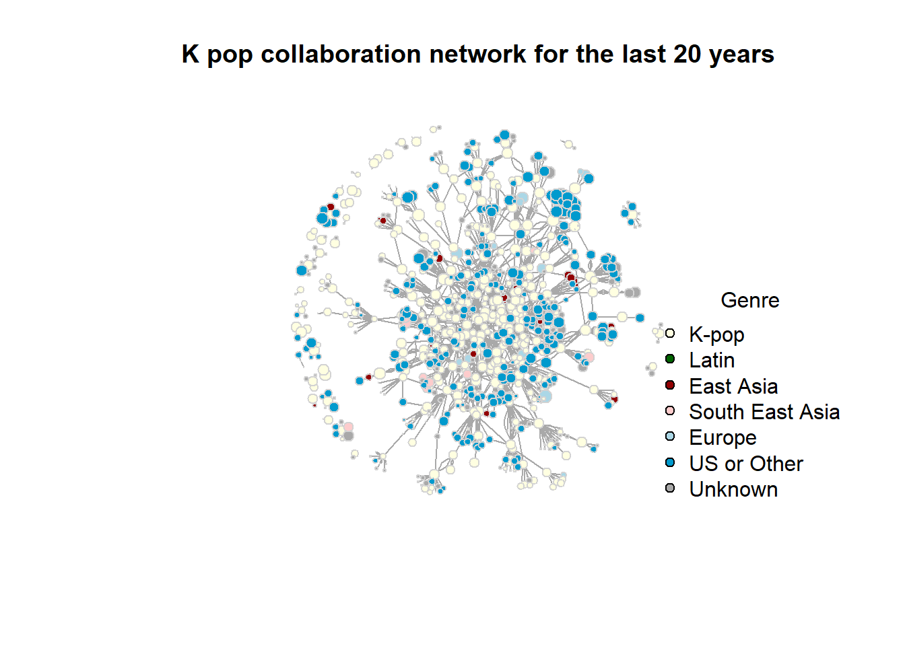
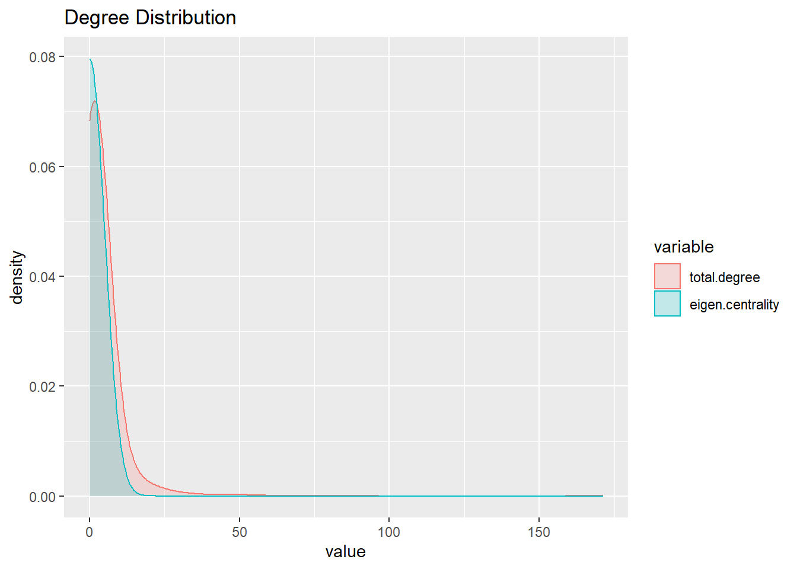
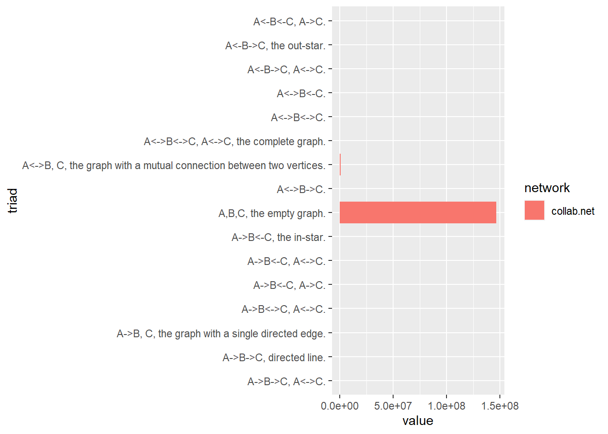
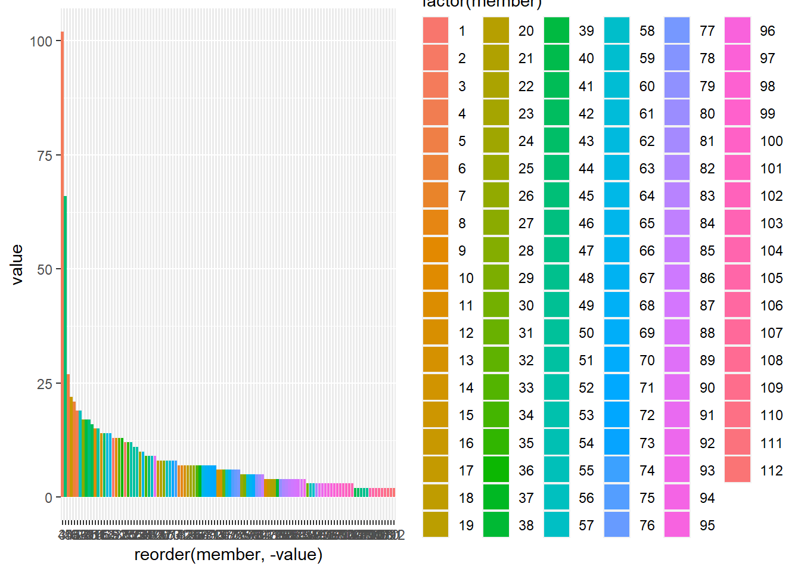
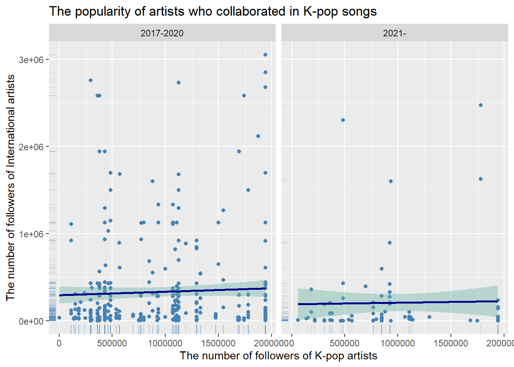

The phenomenon of K-pop has recently emerged as a prominent cultural force, gaining significant attention and popularity not only in South Korea and other Asian nations but globally as well, particularly among the younger generation. An interesting aspect of K-pop is that many K-pop artists collaborate with other artists, often those who are not based in South Korea. In this analysis, my objective is to delve into the dynamics of such collaborations within the K-pop industry and beyond, across various musical genres, and to investigate how these collaborative patterns have evolved over time. To achieve this goal, I aim to examine the social network of K-pop collaborations, with a view to gaining a better understanding of the underlying trends and structures shaping this phenomenon.
Literature review and hypothesis
During the 1990s, Seo Taiji gained significant popularity in the K-pop industry by pioneering a fusion of hip-hop and euro-pop-inspired songs (Kyung, 2021). Subsequently, from the late 1990s to the mid-2020s, K-pop experienced a surge in popularity in other Asian regions, particularly China and Japan (Kyung, 2021; Shin, 2009). The notable global success of Psy’s “Gangnam Style” in 2012 served as a pivotal moment, propelling K-pop into the U.S. market and instilling hope within the industry for accessing a broader international audience (Kyung, 2021). Based on these historical developments, I hypothesized: H1. K-pop started to collaborate on songs with international artists, particularly those from Western countries, following the impact of “Gangnam Style” in 2012.”
Methods of studies
To analyze the K-pop music landscape, the following steps were taken: First, the name of K-pop artists were gathered by prompting ChatGPT on famous K-pop artists for the last 20 years (specifically, as of 2005, 2010, 2012, 2015, 2018, and 2020) and by extracting all the artists’ name from Spotify official playlists “Top-KPop Artists of 2022,” “Millenium K-Pop,” “Best of 2008: K-Pop”. Then, all the songs who are sung by these artists were gathered using Spotify API and only collaboration songs, which are sung by more than one artist were used for this analysis. This resulted in 1123 songs by 962 artists/groups. (Refer to “Preparation_SpotifyID.ipynb” and “K-Pop Social Network ANalysis.ipynb” for the process of data collection.)
Read in & Describe data
collab_songs.csv:
This is a list of collaboration songs collected by
gathering the name of the top 50 Kpop artists in 2010, 2015, and 2020 by asking ChatGPT
manually collecting their Spotify artist id
collecting all the singles/albums data of the artists by using Spotify API and
removing the songs that are NOT collaborative by filtering out those who have only one artist registered
artist.csv:
This is a list of artists performed the collaboration songs collected by
extracting the unique artists from the collab_songs.csv
collecting their information (genre and followers) using Spotify API
song_detail.csv:
This is a list of songs with detail information prepared by
extracting the detailed song information (release year, available market etc) by using Spotify API based on the track id from kpop_collab.csv
Code
# install librarieslibrary(igraph)
Warning: package 'igraph' was built under R version 4.2.2
Attaching package: 'igraph'
The following objects are masked from 'package:stats':
decompose, spectrum
The following object is masked from 'package:base':
union
Code
library(dplyr)
Attaching package: 'dplyr'
The following objects are masked from 'package:igraph':
as_data_frame, groups, union
The following objects are masked from 'package:stats':
filter, lag
The following objects are masked from 'package:base':
intersect, setdiff, setequal, union
Code
library(readr)
Warning: package 'readr' was built under R version 4.2.2
Code
library(ggplot2)library(tidyr)
Attaching package: 'tidyr'
The following object is masked from 'package:igraph':
crossing
Rows: 1123 Columns: 30
── Column specification ────────────────────────────────────────────────────────
Delimiter: ","
chr (30): song_name, kpop_artist_name, song_id, artist_id, artist_1, artist_...
ℹ Use `spec()` to retrieve the full column specification for this data.
ℹ Specify the column types or set `show_col_types = FALSE` to quiet this message.
Rows: 962 Columns: 5
── Column specification ────────────────────────────────────────────────────────
Delimiter: ","
chr (3): name, id, genre
dbl (2): top_kpop, followers
ℹ Use `spec()` to retrieve the full column specification for this data.
ℹ Specify the column types or set `show_col_types = FALSE` to quiet this message.
New names:
Rows: 1123 Columns: 20
── Column specification
──────────────────────────────────────────────────────── Delimiter: "," chr
(11): album, artists, available_markets, external_ids, external_urls, h... dbl
(6): ...1, disc_number, duration_ms, popularity, track_number, release... lgl
(2): explicit, is_local date (1): release_date
ℹ Use `spec()` to retrieve the full column specification for this data. ℹ
Specify the column types or set `show_col_types = FALSE` to quiet this message.
• `` -> `...1`
Code
song_detail <- song_detail %>%select(-c("...1"))
Describe & Clean the data
collab_songs dataframe
collab_songs is a dataframe where each observation is a collaboration songs by Kpop top artists and other artists.
It has 1123 rows (collaboration songs) and 30 columns.
Code
library(skimr)
Warning: package 'skimr' was built under R version 4.2.3
Code
# Skim the dataskim(collab_songs)
Data summary
Name
collab_songs
Number of rows
1123
Number of columns
30
_______________________
Column type frequency:
character
30
________________________
Group variables
None
Variable type: character
skim_variable
n_missing
complete_rate
min
max
empty
n_unique
whitespace
song_name
0
1.00
1
140
0
1116
0
kpop_artist_name
0
1.00
1
19
0
140
0
song_id
0
1.00
22
22
0
1123
0
artist_id
0
1.00
22
22
0
140
0
artist_1
0
1.00
1
36
0
669
0
artist_id_1
0
1.00
22
22
0
667
0
artist_2
697
0.38
1
19
0
228
0
artist_id_2
698
0.38
22
22
0
227
0
artist_3
990
0.12
3
21
0
106
0
artist_id_3
990
0.12
22
22
0
106
0
artist_4
1086
0.03
4
19
0
32
0
artist_id_4
1086
0.03
22
22
0
32
0
artist_5
1103
0.02
4
17
0
16
0
artist_id_5
1103
0.02
22
22
0
16
0
artist_6
1113
0.01
5
13
0
10
0
artist_id_6
1113
0.01
22
22
0
10
0
artist_7
1116
0.01
5
17
0
7
0
artist_id_7
1116
0.01
22
22
0
7
0
artist_8
1120
0.00
5
11
0
3
0
artist_id_8
1120
0.00
22
22
0
3
0
artist_9
1121
0.00
4
9
0
2
0
artist_id_9
1121
0.00
22
22
0
2
0
artist_10
1121
0.00
2
7
0
2
0
artist_id_10
1121
0.00
22
22
0
2
0
artist_11
1122
0.00
12
12
0
1
0
artist_id_11
1122
0.00
22
22
0
1
0
artist_12
1122
0.00
13
13
0
1
0
artist_id_12
1122
0.00
22
22
0
1
0
artist_13
1122
0.00
8
8
0
1
0
artist_id_13
1122
0.00
22
22
0
1
0
Code
summary(collab_songs)
song_name kpop_artist_name song_id artist_id
Length:1123 Length:1123 Length:1123 Length:1123
Class :character Class :character Class :character Class :character
Mode :character Mode :character Mode :character Mode :character
artist_1 artist_id_1 artist_2 artist_id_2
Length:1123 Length:1123 Length:1123 Length:1123
Class :character Class :character Class :character Class :character
Mode :character Mode :character Mode :character Mode :character
artist_3 artist_id_3 artist_4 artist_id_4
Length:1123 Length:1123 Length:1123 Length:1123
Class :character Class :character Class :character Class :character
Mode :character Mode :character Mode :character Mode :character
artist_5 artist_id_5 artist_6 artist_id_6
Length:1123 Length:1123 Length:1123 Length:1123
Class :character Class :character Class :character Class :character
Mode :character Mode :character Mode :character Mode :character
artist_7 artist_id_7 artist_8 artist_id_8
Length:1123 Length:1123 Length:1123 Length:1123
Class :character Class :character Class :character Class :character
Mode :character Mode :character Mode :character Mode :character
artist_9 artist_id_9 artist_10 artist_id_10
Length:1123 Length:1123 Length:1123 Length:1123
Class :character Class :character Class :character Class :character
Mode :character Mode :character Mode :character Mode :character
artist_11 artist_id_11 artist_12 artist_id_12
Length:1123 Length:1123 Length:1123 Length:1123
Class :character Class :character Class :character Class :character
Mode :character Mode :character Mode :character Mode :character
artist_13 artist_id_13
Length:1123 Length:1123
Class :character Class :character
Mode :character Mode :character
collab_songs has following columns.
song_name
song_id: this can be used as a key when joining with song_detail dataframe
kpop_artist_name: This is a name of the Kpop top artists.(KPop top artists are from Spotify Top playlists or the answers from Chat GPT)
artist_id: This is a Spotify Artist id of the Kpop top artists. This can be used as a key when joining with artist dataframe
artist_[i]: This is a name of the artists that collaborated with Kpop top artists or the Kpop top artists themselves, which means that it might duplicate with kpop_artist_name (i is a number from 1 to 7)
artist_id_[i]: This is a Spotify Artist ID of the artists that collaborated with Kpop top artists or the Kpop top artists themselves, which means that it might duplicate with artist_id (i is a number from 1 to 7). This can be used as a key when joining with artists dataframe.
artists is a dataframe where each row represents an artist (individual/group) that have participated in Kpop collaboration songs by top Kpop artists.
name: the name of the artist
id: This is a Spotify Artist ID of the artist. It can be used as a key when joining with collab_songs dataframe
top_kpop: if the artist is one of the top 50 Kpop artists in 2010, 2015, or 2020, the value is 1. Otherwise, the value is 0.
genre: the genre of the artist (can be multiple)
followers: the number of the followers on Spotify. Spotify API doesn’t provide the number of artists’ monthly followers so the number of followers is the only index of popularity of artists.
artist dataframe has 962 unique rows, meaning that there are 962 artists (including K-pop artists, and non-kpop artists) that have participated in K-pop musical collaboration
Code
skim(artists)
Data summary
Name
artists
Number of rows
962
Number of columns
5
_______________________
Column type frequency:
character
3
numeric
2
________________________
Group variables
None
Variable type: character
skim_variable
n_missing
complete_rate
min
max
empty
n_unique
whitespace
name
0
1
1
36
0
962
0
id
0
1
22
22
0
962
0
genre
0
1
2
154
0
237
0
Variable type: numeric
skim_variable
n_missing
complete_rate
mean
sd
p0
p25
p50
p75
p100
hist
top_kpop
0
1
0.15
0.35
0
0.00
0
0.0
1
▇▁▁▁▂
followers
0
1
1346115.00
5889520.19
0
1167.25
39480
387868.5
111956794
▇▁▁▁▁
Code
summary(artists)
name id top_kpop genre
Length:962 Length:962 Min. :0.0000 Length:962
Class :character Class :character 1st Qu.:0.0000 Class :character
Mode :character Mode :character Median :0.0000 Mode :character
Mean :0.1455
3rd Qu.:0.0000
Max. :1.0000
followers
Min. : 0
1st Qu.: 1167
Median : 39480
Mean : 1346115
3rd Qu.: 387868
Max. :111956794
Code
artists
# A tibble: 962 × 5
name id top_k…¹ genre follo…²
<chr> <chr> <dbl> <chr> <dbl>
1 Relax Beer 04BxwccHO4U2wMwVLv… 0 [] 2 e0
2 KAHI 04C0MPapc1HXpTbspJ… 0 [] 0
3 LE 04JxNGSux7QdmrCvnQ… 0 [] 4.2 e1
4 Sunwoojunga 04L3elxyr0XFua2Ek3… 0 ['k-… 9.49e4
5 Miso 04xEkodoWyFji8icX9… 0 ['ko… 7.97e4
6 Symba 06S3fr7xEES7e3QPXh… 0 [] 6.66e4
7 Tommy “TBHits” Brown 06moEoVtCKweJmGYid… 0 [] 5 e0
8 m-flo loves Sik-K & eill & 向井太一 072YnMT5EniZhvDssX… 0 [] 8.64e2
9 Sebastian Yatra 07YUOmWljBTXwIseAU… 0 ['co… 2.15e7
10 Jason Derulo 07YZf4WDAMNwqr4jfg… 0 ['da… 1.18e7
# … with 952 more rows, and abbreviated variable names ¹top_kpop, ²followers
# A tibble: 962 × 2
id n
<chr> <int>
1 04BxwccHO4U2wMwVLvYTLO 1
2 04C0MPapc1HXpTbspJhmWg 1
3 04JxNGSux7QdmrCvnQowyr 1
4 04L3elxyr0XFua2Ek3domW 1
5 04xEkodoWyFji8icX911jM 1
6 06moEoVtCKweJmGYid8vU7 1
7 06S3fr7xEES7e3QPXhu3ay 1
8 072YnMT5EniZhvDssXL2VB 1
9 07YUOmWljBTXwIseAUd9TW 1
10 07YZf4WDAMNwqr4jfgOZ8y 1
# … with 952 more rows
Code
# Clean data by removing unnecessary columnsartists <- artists %>%relocate(id, .before = name)
Code
# This is the list of the genre names that appear in artist dataframeartists %>%select(genre) %>%separate_rows(genre, sep =",\\s*") %>%mutate(genre =gsub("\\[|'|\\]", "", genre)) %>%arrange(genre) %>%count(genre)
# A tibble: 230 × 2
genre n
<chr> <int>
1 "" 353
2 "a cappella" 1
3 "afrobeats" 1
4 "alt z" 5
5 "alternative r&b" 2
6 "american 21st century classical" 1
7 "anime" 1
8 "art pop" 3
9 "asian american hip hop" 5
10 "atl hip hop" 4
# … with 220 more rows
I added two new columns to the artist dataFrame. The first column region_genre, which indicate the broader regional genre of each artist, such as K-pop, Latin-pop, or J-pop (Japanese pop), which would help us to better understand the overall geographical market. The second column would simply indicate whether each artist is K-pop or not.
First, I decided to classify the overall genre by detecting the follwoing word in the genre column
K-pop: “korean”, “k-” (for example k-pop, k-rap). Also any artists whose column “top-kpop” is 1 are considered as K-pop genre.
# A tibble: 7 × 2
region_category n
<chr> <int>
1 East Asia 13
2 Europe 11
3 K-pop 319
4 Latino 11
5 South East Asia 11
6 Unknown 349
7 US or Other 248
There are 349 artists whose genre is unknown. I checked them and changed region_category of some of them.
# I noticed there were a few Japanese artists so I manually changed his region_category "East Asia"artists$region_category[artists$name =="香取慎吾"] <-"East Asia"artists$region_category[artists$name =="Yutaka Furukawa"] <-"East Asia"artists$region_category[artists$name =="Takanori Nishikawa T.M.Revolution"] <-"East Asia"artists$region_category[artists$name =="Naoko Tanaka"] <-"East Asia"artists$region_category[artists$name =="m-flo loves Sik-K & eill & 向井太一"] <-"East Asia"# Artists whose name include Hangul, I manually changed their region_category to "K-pop"artists <- artists %>%arrange(desc(name)) %>%arrange(region_category) # row 371 - 404 are in Hangulartists$region_category[371:404] <-"K-pop"artists$region_category[artists$name =="nafla (나플라)"] <-"K-pop"artists$region_category[artists$name =="MC 몽"] <-"K-pop"
# A tibble: 55 × 2
id name
<chr> <chr>
1 70DFixYAFPv4Pf9kgSfR9O MARK
2 7wFDo161xYdeaiLz3KIHoM Gallant
3 2FgZrgTMX6Sk0VNcOsEPmm Punch
4 7cEaNXXTHx3LokbjUUyHal BIG Naughty
5 31SBgHxc8eqZUk9MdveH42 PREP
6 0JOxt5QOwq0czoJxvSc5hS GASHI
7 2qDIR2WlcW3llkGqJWg9VJ Lolo Zouaï
8 79R17q4kiPsimHDtdOlN2L SEHUN
9 31IZdHrCZ5pRhLz4zBxN3o Riff Raff
10 5C01hDqpEmrmDfUhX9YWsH FIFA Sound
# … with 45 more rows
Code
# I manually changed the region_categoroy for artists whose followers are over 15000 by checking the online informationartists$region_category[artists$id =="70DFixYAFPv4Pf9kgSfR9O"] <-"K-pop"artists$region_category[artists$name =="Gallant"] <-"US or Other"artists$region_category[artists$name =="Punch"] <-"K-pop"artists$region_category[artists$name =="BIG Naughty"] <-"K-pop"artists$region_category[artists$name =="PREP"] <-"Europe"artists$region_category[artists$name =="GASHI"] <-"US or Other"artists$region_category[artists$name =="Lolo Zouaï"] <-"US or Other"artists$region_category[artists$name =="SEHUN"] <-"K-pop"artists$region_category[artists$name =="Riff Raff"] <-"US or Other"artists$region_category[artists$name =="FIFA Sound"] <-"US or Other"artists$region_category[artists$name =="vaultboy"] <-"US or Other"artists$region_category[artists$name =="D_LITE"] <-"K-pop"artists$region_category[artists$name =="Seraphine"] <-"K-pop"artists$region_category[artists$name =="Wonstein"] <-"K-pop"artists$region_category[artists$name =="YooA"] <-"K-pop"artists$region_category[artists$name =="Wuki"] <-"US or Other"artists$region_category[artists$name =="MINNIE"] <-"K-pop"artists$region_category[artists$name =="Symba"] <-"US or Other"artists$region_category[artists$name =="HWANG MIN HYUN"] <-"K-pop"artists$region_category[artists$name =="T.O.P"] <-"K-pop"artists$region_category[artists$name =="End of the World"] <-"East Asia"artists$region_category[artists$name =="MELOH"] <-"K-pop"artists$region_category[artists$name =="LUCAS"] <-"K-pop"artists$region_category[artists$name =="Paul Blanco"] <-"US or Other"artists$region_category[artists$name =="JEON WOONG"] <-"K-pop"artists$region_category[artists$name =="Sion"] <-"K-pop"artists$region_category[artists$name =="KEN THE 390"] <-"East Asia"artists$region_category[artists$name =="BM"] <-"K-pop"artists$region_category[artists$name =="Minhyun"] <-"K-pop"artists$region_category[artists$name =="Yong Jun Hyung"] <-"K-pop"artists$region_category[artists$name =="Lucas"] <-"K-pop"# I learned he is a Hong Kong rapper but is based in South Korea and is a member of Kpop group NCT.artists$region_category[artists$name =="Paniel"] <-"K-pop"artists$region_category[artists$name =="PANIEL"] <-"K-pop"artists$region_category[artists$name =="PENIEL"] <-"K-pop"artists$region_category[artists$name =="LIM YOUNG MIN"] <-"K-pop"artists$region_category[artists$name =="KIM DONG HYUN"] <-"K-pop"artists$region_category[artists$name =="D-LITE"] <-"K-pop"artists$region_category[artists$name =="LUNA"] <-"K-pop"artists$region_category[artists$name =="LEE DAE HWI"] <-"K-pop"artists$region_category[artists$name =="LEEGIKWANG"] <-"K-pop"artists$region_category[artists$name =="T.O.P."] <-"K-pop"artists$region_category[artists$name =="Zior Park"] <-"K-pop"artists$region_category[artists$name =="Sandara Park"] <-"K-pop"artists$region_category[artists$name =="U-KWON"] <-"K-pop"artists$region_category[artists$name =="HOYA"] <-"K-pop"artists$region_category[artists$name =="Slom"] <-"K-pop"artists$region_category[artists$name =="TAEHYUN"] <-"K-pop"artists$region_category[artists$name =="WOOSEOK"] <-"K-pop"artists$region_category[artists$name =="ABLE"] <-"K-pop"artists$region_category[artists$name =="Imad Royal"] <-"US or Other"artists$region_category[artists$name =="J.UNA"] <-"K-pop"artists$region_category[artists$name =="Yeeun"] <-"K-pop"artists$region_category[artists$name =="Reiley"] <-"Europe"artists$region_category[artists$name =="NARSHA"] <-"K-pop"artists$region_category[artists$name =="Son Dong Woon"] <-"K-pop"artists$region_category[artists$name =="LEE CHANHYUK"] <-"K-pop"artists$region_category[artists$name =="The Chosen"] <-"Latino"artists$region_category[artists$name =="JeHwi"] <-"K-pop"artists$region_category[artists$name =="inverness"] <-"US or Other"
# Some artists are from a group where he/she belongs toartists$region_category[str_detect(artists$name, "B.A.P")] <-"K-pop"artists$region_category[str_detect(artists$name, "BTOB")] <-"K-pop"artists$region_category[str_detect(artists$name, "MelodyDay")] <-"K-pop"artists$region_category[str_detect(artists$name, "Urban Zakapa")] <-"K-pop"
# A tibble: 5 × 2
id name
<chr> <chr>
1 4TYswX6bKUjM9rbEL7CMBH YEJI & RYUJIN of ITZY
2 76EfJwRQeOeQ5aMh3FF7z4 Sanchez (of Phantom)
3 40zyx4iztMjRbIIoI802r4 Felix of Stray Kids
4 5Fa7oN67rqbrgxbRVux7F4 CHOI JUNG HOON of JANNABI
5 4nzWj1u4IslWFr3B5f7HfY Ahin of MOMOLAND
Code
# Some artists are from a group where he/she belongs toartists$region_category[str_detect(artists$name, "ITZY")] <-"K-pop"artists$region_category[str_detect(artists$name, "Stray Kids")] <-"K-pop"artists$region_category[str_detect(artists$name, "MOMOLAND")] <-"K-pop"artists$region_category[str_detect(artists$name, "JANNABI")] <-"K-pop"
song_detail is a dataframe where each observation is a collaboration song by K-pop top artists and other artists. While collab_songs provides the general information of the artists that worked on the song, this dataframe provides more detailed information about the songs themselves such as duration, track number, release date etc…
It has 1123 rows (collaboration songs), which is the same as the number of the rows of collab_songs, and 19 columns.
Code
summary(song_detail)
album artists available_markets disc_number
Length:1123 Length:1123 Length:1123 Min. :1
Class :character Class :character Class :character 1st Qu.:1
Mode :character Mode :character Mode :character Median :1
Mean :1
3rd Qu.:1
Max. :1
duration_ms explicit external_ids external_urls
Min. : 5889 Mode :logical Length:1123 Length:1123
1st Qu.:192577 FALSE:1036 Class :character Class :character
Median :211300 TRUE :87 Mode :character Mode :character
Mean :212247
3rd Qu.:230346
Max. :459853
href id is_local name
Length:1123 Length:1123 Mode :logical Length:1123
Class :character Class :character FALSE:1123 Class :character
Mode :character Mode :character Mode :character
popularity preview_url track_number type
Min. : 0.00 Length:1123 Min. : 1.000 Length:1123
1st Qu.:17.00 Class :character 1st Qu.: 1.000 Class :character
Median :28.00 Mode :character Median : 1.000 Mode :character
Mean :29.02 Mean : 2.102
3rd Qu.:40.00 3rd Qu.: 3.000
Max. :86.00 Max. :11.000
uri release_date release_year
Length:1123 Min. :2001-12-19 Min. :2001
Class :character 1st Qu.:2015-05-26 1st Qu.:2015
Mode :character Median :2018-03-08 Median :2018
Mean :2017-08-14 Mean :2017
3rd Qu.:2020-08-24 3rd Qu.:2020
Max. :2023-05-09 Max. :2023
The necessary columns are as follows
id: This is a Spotify song id. Can be used as a key when joining with collab_songs
name: name of the songs
popularity: the popularity index from Spotify
release_year:
Code
# # I will remove unnecessary columns# song_detail <- song_detail %>% # select(c("id", "name", "popularity", "release_year"))# # song_detail$release_year <- as.integer(song_detail$release_year)# song_detail %>% arrange(release_year)# ```# # ## Extra data cleaning# # `collab_songs` include unofficial songs by unofficial accounts. For example, there are a few songs by After School and Blackpink. However, if you look at the Spotify album page, this "Blackpink" is different from "BLACK PINK". There seem to be several cases that the artist ID is not the correct one. So I removed the songs that are not by "official" (=with more monthly followers) accounts.# # # ```{r}# # # Remove the songs by artist_1 whose id doesn't exist# collab_songs <- collab_songs %>%# left_join(artists, by = c("artist_id_1" = "id")) %>%# filter(!is.na(name)) %>%# select(-c("name", "top_kpop", "genre", "followers", "name_lower", "region_category", "kpop"))# # # Remove the songs by artist_2 whose id doesn't exist # collab_songs <- collab_songs %>% # left_join(artists, by = c("artist_id_2" = "id")) %>%# filter(is.na(artist_2)|!is.na(name)) %>%# select(-c("name", "top_kpop", "genre", "followers", "name_lower", "region_category", "kpop"))# # # Remove the songs by artist_3 whose id doesn't exist # collab_songs <- collab_songs %>% # left_join(artists, by = c("artist_id_3" = "id")) %>%# filter(is.na(artist_3)|!is.na(name)) %>%# select(-c("name", "top_kpop", "genre", "followers", "name_lower", "region_category", "kpop"))# # # Remove the songs by artist_4 whose id doesn't exist # collab_songs <- collab_songs %>% # left_join(artists, by = c("artist_id_4" = "id")) %>%# filter(is.na(artist_4)|!is.na(name)) %>%# select(-c("name", "top_kpop", "genre", "followers", "name_lower", "region_category", "kpop"))# # # Remove the songs by artist_5 whose id doesn't exist # collab_songs <- collab_songs %>% # left_join(artists, by = c("artist_id_5" = "id")) %>%# filter(is.na(artist_5)|!is.na(name)) %>%# select(-c("name", "top_kpop", "genre", "followers", "name_lower", "region_category", "kpop"))# # # Remove the songs by artist_6 whose id doesn't exist # collab_songs <- collab_songs %>% # left_join(artists, by = c("artist_id_6" = "id")) %>%# filter(is.na(artist_6)|!is.na(name)) %>%# select(-c("name", "top_kpop", "genre", "followers", "name_lower", "region_category", "kpop"))# # # Remove the songs by artist_7 whose id doesn't exist # collab_songs <- collab_songs %>% # left_join(artists, by = c("artist_id_7" = "id")) %>%# filter(is.na(artist_7)|!is.na(name)) %>%# select(-c("name", "top_kpop", "genre", "followers", "name_lower", "region_category", "kpop"))# # collab_songs
Exploratory Data Analysis
How many K-pop collaboration songs are released by year?
Code
collab_songs %>%left_join(song_detail, by =c("song_id"="id")) %>%ggplot(aes(x=release_year)) +geom_bar() +scale_x_continuous(breaks=seq(2010, 2022, 5)) +xlim(2000, 2023) +labs(title ="The number of K-pop collaboration songs", subtitle ="The number of collaboration songs by K-pop top artists is increasing over the time")
Scale for 'x' is already present. Adding another scale for 'x', which will
replace the existing scale.
# A tibble: 403 × 2
name followers
<chr> <dbl>
1 BTS 64752045
2 BLACKPINK 40782301
3 TWICE 17544057
4 j-hope 14644327
5 RM 13576102
6 V 13096788
7 Agust D 11679645
8 Stray Kids 11204838
9 SEVENTEEN 9155169
10 Red Velvet 8364750
# … with 393 more rows
Data Processing
Convert the data in an edgelist format
To analyze this data in a perspective of social network, I need to convert this data into an edgelist where from_nodes are K-pop top artists, to_nodes are artists who collaborated with them, and edges are songs.
Code
# convert collab_songs to edgelistedgelist <- collab_songs %>%pivot_longer(cols =starts_with("artist_id_"),names_to ="variable",values_to ="to_artist_id" )%>%filter(!is.na(to_artist_id)) %>%# Remove the rows where the to_artist_id is blank filter(artist_id != to_artist_id) %>%# Remove the rows where from_artist and to_artist are the same select(c("artist_id", "to_artist_id", "song_id", "song_name")) %>%left_join(artists, by =c("artist_id"="id")) %>%select(c("artist_id", "to_artist_id", "song_id", "song_name", "name")) %>%left_join(artists, by =c("to_artist_id"="id")) %>%select(c("artist_id", "to_artist_id", "song_id", "song_name", "name.x", "name.y", "region_category"))# Change the name of columnscolnames(edgelist) <-c("From", "To", "song_id", "song_name", "From_artists", "To_artists", "Collab_region1")# Add new columns of collaboration typesedgelist <- edgelist %>%mutate(Collab_region2 =case_when( Collab_region1 =="K-pop"~"Domestic/Unknown",TRUE~"International" ))# Add a new column of release yearedgelist <- edgelist %>%left_join(song_detail, by =c("song_id"="id")) %>%select(c("From", "To", "song_id", "song_name", "From_artists", "To_artists", "Collab_region1", "Collab_region2", "release_year", "popularity"))
Code
# convert edgelist into a graphcollab.net <- igraph::graph_from_data_frame(edgelist, directed =FALSE, vertices = artists)
This is the graph of the last 20 years’ K-pop collaboration.
Code
plot(collab.net,vertex.label =NA,arrow.mode="-",vertex.size =log(V(collab.net)$followers) *0.4,vertex.label.cex = .4,vertex.label.color ="black",vertex.frame.color ='lightgrey',vertex.label.dist =0,frame.width =0,color =V(collab.net)$color_region_category,main ="K pop collaboration network for the last 20 years",ref ="The size of the circles means the popularity" )legend("bottomright",legend =c("K-pop", "Latin", "East Asia", "South East Asia", "Europe", "US or Other", "Unknown"),pt.bg =c("#FFFFE1", "darkgreen", "#920002","#FDCCCC", "#ABD7E6", "deepskyblue3", "darkgrey"),pch =21,cex =1,bty ="n",title ="Genre" )

Network overview
Nodes and Edges
As mentioned, this network consists of 962 nodes (artists) and 1519 edges. The number of edges and the number of songs are not the same because one song can have more than 2 artists.
Code
print(vcount(collab.net))
[1] 962
Code
print(ecount(collab.net))
[1] 1519
Density and transitivity
Density and transitivity of K-pop collaboration network is not high.
The following object is masked from 'package:tidyr':
smiths
Code
nodes %>% melt %>%ggplot(aes(x = value, fill = variable, color = variable)) +geom_density(alpha = .2, bw =5) +ggtitle('Degree Distribution')
Using name as id variables

Dyad Census
It is expected that there is no asymmetry dyad because collaboration network is NOT directed. There are quite many null dyads, meaning that there are many artists that don’t work together.
Code
dyad.census(collab.net)
$mut
[1] 1199
$asym
[1] 0
$null
[1] 461042
Triad Census
Most triads are empty because when artist A works with artist B, they don’t work with the same artists.
Code
triad.labels <-c("A,B,C, the empty graph.","A->B, C, the graph with a single directed edge.","A<->B, C, the graph with a mutual connection between two vertices.","A<-B->C, the out-star.","A->B<-C, the in-star.","A->B->C, directed line.","A<->B<-C.","A<->B->C.","A->B<-C, A->C.","A<-B<-C, A->C.","A<->B<->C.","A<-B->C, A<->C.","A->B<-C, A<->C.","A->B->C, A<->C.","A->B<->C, A<->C.","A<->B<->C, A<->C, the complete graph.")triad.census.data <-data.frame(label = triad.labels, collab.net =triad.census(collab.net)) %>% melt
Warning in triad.census(collab.net): At core/misc/motifs.c:1165 : Triad census
called on an undirected graph.
Using label as id variables
Code
colnames(triad.census.data) <-c('triad', 'network', 'value')triad.census.data %>%ggplot(aes(x = value, y = triad, fill = network)) +geom_bar(stat ='identity', position ='dodge')

Transitivity
Code
nodes$transitivity <-transitivity(collab.net, type ='local')melt(nodes) %>%filter(variable =='transitivity'| variable =='weighted.transitivity') %>%ggplot(aes(x = value, fill = variable, color = variable)) +geom_density(alpha =0.2) +ggtitle('Transitivity Distribution')
There are more than 110 components in this network. Most of them have members less than 25.
Code
wc.collab.net <-cluster_walktrap(collab.net)member <-membership(wc.collab.net)nodes$member <- membertable(member) %>% melt %>% ggplot +geom_bar(aes(x =reorder(member, - value), y = value, fill =factor(member)), stat ='identity')

Closer look
Since the graph of 20 years doesn’t give information about how K-pop collaboration has evolved so I analyzed the graph by year. There are few collaboration songs before 2005, so from here I will limit my analysis to the time span from 2005 till present (as of May 17, 2023).
Code
# Make a graph for each yeargraph_from_data_frame_with_all_vertices <-function(df, vertices) {# Create a data frame with all possible edges between vertices unique_vertices <-unique(c(df$From, df$To)) artists_period <- artists[artists$id %in% unique_vertices, ]# Create the graph with all vertices and existing edges graph <-graph_from_data_frame(df, directed =FALSE, vertices = artists_period)return(graph)}graphs_year <-lapply(2006:2023, function(x) graph_from_data_frame_with_all_vertices(df = edgelist[edgelist$release_year == x, ], vertices = artists))periods <-c(2006:2023)# for (i in 1:length(graphs_year)) {# V(graphs_year[[i]])$color <- V(graphs_year[[i]])$color_region_category# plot(graphs_year[[i]], # vertex.label = V(graphs_year[[i]])$show_kpop_top,# arrow.mode="-",# vertex.size = log(V(graphs_year[[i]])$followers) * 0.7,# vertex.label.cex = .8,# vertex.label.color = "black",# vertex.label.dist = 0,# frame.width = 0,# color = V(graphs_year[[i]])$color_region_category,# main = paste0("Collaboration by K-pop top artists ", periods[[i]])# )# # legend(# "bottomright",# legend = c("K-pop", "Latin", "East Asia", "South East Asia", "Europe", "US or Other", "Unknown"),# pt.bg = c("#FFFFE1", "darkgreen", "#920002","#FDCCCC", "#ABD7E6", "#010087", "darkgrey"),# pch = 21,# cex = 1,# bty = "n",# title = "Genre"# )# }graph_stats <-data.frame(year =2006:2023, num_nodes =numeric(length(2006:2023)), num_edges =numeric(length(2006:2023)), num_songs =numeric(length(2006:2023)),artists_per_song =numeric(length(2006:2023)),centralization =numeric(length(2006:2023)), density =numeric(length(2006:2023)), transitivity =numeric(length(2006:2023)))# Loop through each year and calculate the desired graph statisticsfor (i in1:length(graphs_year)) { graph <- graphs_year[[i]]# Fill in the corresponding row of the data frame with the calculated statistics graph_stats[i, "num_nodes"] <-vcount(graph) graph_stats[i, "num_edges"] <-ecount(graph) song_ids <-E(graph)$song_id num_unique_songs <-length(unique(song_ids)) graph_stats[i, "num_songs"] <- num_unique_songs graph_stats[i, "centralization"] <-centr_degree(graph)$centralization graph_stats[i, "density"] <-graph.density(graph) graph_stats[i, "transitivity"] <-transitivity(graph, type ='global')}collab_by_years <- edgelist %>%group_by(release_year) %>%summarize(popularity =mean(popularity),K_Pop =sum(Collab_region1 =="K-pop"),US_Other =sum(Collab_region1 =="US or Other"),E_Asia =sum(Collab_region1 =="East Asia"),SE_Asia =sum(Collab_region1 =="South East Asia"),Latino =sum(Collab_region1 =="Latino"),Europe =sum(Collab_region1 =="Europe"),Unknown =sum(Collab_region1 =="Unknown") )graph_stats <- graph_stats %>%left_join(collab_by_years, by =c("year"="release_year"))%>%mutate(song_per_kpop_artists = num_songs/`K_Pop`)graph_stats
# (3 years moving average range) Closer look: How does the network change every year
Code
# Create a plot with a bar chart and a line chartgraph_stats %>%pivot_longer(cols =c("K_Pop", "US_Other", "E_Asia", "SE_Asia", "Latino", "Europe", "Unknown"), names_to ="collab_region") %>%mutate(collab_region =factor(collab_region, levels =c("K_Pop", "US_Other", "E_Asia", "SE_Asia", "Latino", "Europe", "Unknown"))) %>%ggplot(aes(x = year)) +geom_bar(aes(y = value, fill = collab_region), stat ="identity") +labs(y ="Number", x ="year", title ="The number of K-pop collaboration songs", sub ="After around 2017 the number of international collaboration songs increased.") +scale_color_manual(" ", values =c("num_edges"="black")) +scale_fill_manual("Collab Region", values =c("K_Pop"="#FFFFE1", "Latino"="darkgreen", "E_Asia"="#920002","SE_Asia"="#FDCCCC", "Europe"="#ABD7E6", "US_Other"="#010087","Unknown"="darkgrey"))
This graph shows that around 2012, the number of collaboration songs among K-pop artists was limited, with few international collaborations. The network is sparse In 2014, the number of K-pop collaborations started increasing with more Western collaborations. Between 2015 and 2020, K-pop experienced significant growth in terms of the number and types of collaborations. The collaborations werenot limited to the US-based artists, but to small numbers of Latino, East-Asian, South East Asian, and Europe based artists. After 2021, the number of collaborations per year is decreased, and the proportion of collaborations involving K-pop artists with artists from the US or countries other than Korea has been increasing.
(By regime)
The graph above illustrates that collaborations in K-pop have different characteristics depending on the era. Taking into account the aforementioned features and significant milestones in the history of K-pop, such as the 2012 breakout with “Gangnam Style” and the major advancement in the American market by BTS in 2017, I have decided to divide the period from 2005 to 2023 into four eras: 2005-2011, 2012-2016, 2017-2020, and 2021-2023.
# A tibble: 1,519 × 11
From To song_id song_…¹ From_…² To_ar…³ Colla…⁴ Colla…⁵ relea…⁶ popul…⁷
<chr> <chr> <chr> <chr> <chr> <chr> <chr> <chr> <dbl> <dbl>
1 3Nrfpe… 1oSP… 5qyjy0… Angel … BTS Jimin K-pop Domest… 2023 79
2 3Nrfpe… 164U… 5qyjy0… Angel … BTS JVKE US or … Intern… 2023 79
3 3Nrfpe… 46SH… 5qyjy0… Angel … BTS Kodak … Latino Intern… 2023 79
4 3Nrfpe… 0Erz… 5qyjy0… Angel … BTS NLE Ch… US or … Intern… 2023 79
5 3Nrfpe… 7tjV… 5qyjy0… Angel … BTS Muni L… US or … Intern… 2023 79
6 3Nrfpe… 6HaG… 1RDvyO… Dreame… BTS Jung K… K-pop Domest… 2022 86
7 3Nrfpe… 5C01… 1RDvyO… Dreame… BTS FIFA S… US or … Intern… 2022 86
8 3Nrfpe… 5CiG… 0xzI1K… Bad De… BTS benny … US or … Intern… 2022 78
9 3Nrfpe… 7hJc… 0xzI1K… Bad De… BTS Snoop … US or … Intern… 2022 78
10 3Nrfpe… 6VuM… 0mBP9X… Left a… BTS Charli… US or … Intern… 2022 82
# … with 1,509 more rows, 1 more variable: regime <chr>, and abbreviated
# variable names ¹song_name, ²From_artists, ³To_artists, ⁴Collab_region1,
# ⁵Collab_region2, ⁶release_year, ⁷popularity
Code
#E(collab.net)$period <- edgelist$period
Code
# Split the edgelist dataframe into 4 groups based on "period"edgelist_list <-split(edgelist, edgelist$regime)# convert each element of the list into a separate dataframegraphs <-list()for (i inseq_along(edgelist_list)) {assign(paste0("edgelist_", names(edgelist_list)[i]), edgelist_list[[i]]) unique_vertices <-unique(c(edgelist_list[[i]]$From, edgelist_list[[i]]$To)) artists_period <- artists[artists$id %in% unique_vertices, ]# Create the graph from the filtered edgelist and vertices graph <-graph_from_data_frame(edgelist_list[[i]], directed =FALSE, vertices = artists_period)# Append the graph to the list of graphs graphs[[i]] <- graph}
Overview: How the collaboration patterns have changed over time?
Between 2006 and 2010, the number of collaboration songs among K-pop artists was limited, with few international collaborations with artists outside of South Korea. Additionally, the network was sparse and disconnected.
From 2011 to 2015, the number of collaboration songs slightly increased, with more international collaborations and a more connected network.
Between 2016 and 2020, K-pop experienced significant growth in terms of the number and types of collaborations. Notably, BTS, G(I)DLE, and Blackpink have a large number of international collaboration songs.
In 2021, the number of collaboration songs is not as large as that of 2016-2020 due to the shorter time span, but the proportion of international collaborations appears to be higher.
# Loop through each year and calculate the desired graph statisticsfor (i in1:length(regime)) { start_year <- graph_stats_regimes$start_year[i] end_year <- graph_stats_regimes$end_year[i]# Subset the data for the current 3-year span subset_data <- edgelist[edgelist$release_year %in%c(start_year:end_year), ]print(start_year)print(end_year)# Create the graph for the current 3-year span graph <-graph_from_data_frame_with_all_vertices(df = subset_data, vertices = artists)# Fill in the corresponding row of the data frame with the calculated statistics graph_stats_regimes[i, "num_nodes"] <-vcount(graph) graph_stats_regimes[i, "num_edges"] <-ecount(graph) song_ids <-E(graph)$song_id num_unique_songs <-length(unique(song_ids)) graph_stats_regimes[i, "num_songs"] <- num_unique_songs kpop_values <-V(graph)$kpop num_kpop <-sum(kpop_values =="yes") graph_stats_regimes[i, "num_kpop_artists"] <- num_kpop graph_stats_regimes[i, "num_no_kpop_artists"] <-vcount(graph) - num_kpop graph_stats_regimes[i, "percent_no_kpop_artitst"] <- (vcount(graph)-num_kpop)/vcount(graph) graph_stats_regimes[i, "artists_per_song"] <-vcount(graph)/num_unique_songs graph_stats_regimes[i, "centralization"] <-centr_degree(graph)$centralization graph_stats_regimes[i, "density"] <-graph.density(graph) graph_stats_regimes[i, "transitivity"] <-transitivity(graph, type ='global') kpop_values <-V(graph)$kpop num_kpop <-sum(kpop_values =="yes") graph_stats_regimes[i, "num_kpop_artists"] <- num_kpop}
# Define the 3-year spans# for (i in 1:length(end_years)) {# end_year <- end_years[i]# start_year <- end_year - 2# year <- end_year -1# # # Subset the data for the current 3-year span# subset_data <- edgelist[edgelist$release_year %in% c(start_year:end_year), ]# # # Create the graph for the current 3-year span# graph <- graph_from_data_frame_with_all_vertices(df = subset_data, vertices = artists)# # V(graph)$color <- V(graph)$color_region_category# # plot(graph,# vertex.label = V(graph)$show_kpop_top,# arrow.mode = "-",# vertex.size = log(V(graph)$followers) * 0.7,# vertex.label.cex = 0.6,# vertex.label.color = "black",# vertex.frame.color = 'lightgrey',# vertex.label.dist = 0,# frame.width = 0,# color = V(graph)$color_region_category,# main = paste0("Collaboration by K-pop top artists ", start_year, "-", end_year)# )# # # legend(# "bottomright",# legend = c("K-pop", "Latin", "East Asia", "South East Asia", "Europe", "US or Other", "Unknown"),# pt.bg = c("#FFFFE1", "darkgreen", "#920002","#FDCCCC", "#ABD7E6", "deepskyblue3", "darkgrey"),# pch = 21,# cex = 1,# bty = "n",# title = "Genre"# )# }
Code
# end_years <- 2008:2023# graph_stats_3years <- data.frame(# start_year = 2006:2021,# end_year = 2008:2023, # year = 2007:2022,# num_nodes = numeric(length(2008:2023)), # num_edges = numeric(length(2008:2023)), # num_songs = numeric(length(2008:2023)),# num_kpop_artists = numeric(length(2008:2023)),# num_no_kpop_artists = numeric(length(2008:2023)),# percent_no_kpop_artitst = numeric(length(2008:2023)),# artists_per_song = numeric(length(2008:2023)),# centralization = numeric(length(2008:2023)), # density = numeric(length(2008:2023)), # transitivity = numeric(length(2008:2023))# )# # # Loop through each year and calculate the desired graph statistics# # for (i in 1:length(end_years)) {# end_year <- end_years[i]# start_year <- end_year - 2# # # Subset the data for the current 3-year span# subset_data <- edgelist[edgelist$release_year %in% c(start_year:end_year), ]# # # Create the graph for the current 3-year span# graph <- graph_from_data_frame_with_all_vertices(df = subset_data, vertices = artists)# # # Fill in the corresponding row of the data frame with the calculated statistics# graph_stats_3years[i, "num_nodes"] <- vcount(graph)# graph_stats_3years[i, "num_edges"] <- ecount(graph)# # song_ids <- E(graph)$song_id# num_unique_songs <- length(unique(song_ids))# graph_stats_3years[i, "num_songs"] <- num_unique_songs# # kpop_values <- V(graph)$kpop# num_kpop <- sum(kpop_values == "yes")# graph_stats_3years[i, "num_kpop_artists"] <- num_kpop# # graph_stats_3years[i, "num_no_kpop_artists"] <- vcount(graph) - num_kpop# graph_stats_3years[i, "percent_no_kpop_artitst"] <- (vcount(graph)-num_kpop)/vcount(graph)# # graph_stats_3years[i, "artists_per_song"] <- vcount(graph)/num_unique_songs# # graph_stats_3years[i, "centralization"] <- centr_degree(graph)$centralization# graph_stats_3years[i, "density"] <- graph.density(graph)# graph_stats_3years[i, "transitivity"] <- transitivity(graph, type = 'global')# # kpop_values <- V(graph)$kpop# num_kpop <- sum(kpop_values == "yes")# graph_stats_3years[i, "num_kpop_artists"] <- num_kpop# # # # }# # graph_stats_3years
How does the nature of collaboration change between 2017-2020 and 2021-?
As the first graph showed, the number of collaborations has decreased since 2021 after it peaked in 2020 even though the they are quite diverse with many US-based artists and a few East Asian, South East Asian, and Latino artists.
Here, I will try to find out what has changed since 2021 and what caused this change.
One of the hypotheses is that as K-pop had established its international popularity by 2021, there was no longer a need for as many collaborations with international artists. Instead, artists relatively less popular whose main base is not South Korea started collaborating with K-pop artists to benefit from its popularity.
In Regime 3 (2017-2020) and Regime 4 (2021-), the relationship between K-pop artists and international artists in collaborations has changed. In Regime 3, K-pop artists often collaborated with internationally renowned artists. However, in Regime 4, this trend has shifted, and compared to Regime 3, there seems to be an increasing tendency for more popular K-pop artists to collaborate with relatively less famous non-Korean-based artists. This can be observed in the right graph above, where the slope becomes gentler, with the y-axis representing the popularity of international artists and the x-axis representing the popularity of K-pop artists.
Code
analysis <- edgelist %>%filter(regime =="2017-2020"| regime =="2021-"& Collab_region2 =="International") %>%select(-c("Collab_region1", "Collab_region2")) %>%left_join(artists %>%select(c("id", "followers")), by =c("From"="id")) %>%left_join(artists %>%select(c("id", "followers")), by =c("To"="id")) analysis <- analysis %>%rename("Followers_of_Kpop_artists"="followers.x","Followers_of_Intl_artists"="followers.y")analysis %>%filter(Followers_of_Kpop_artists <2000000& Followers_of_Intl_artists >1000& Followers_of_Intl_artists <4000000) %>%ggplot(aes(x =`Followers_of_Kpop_artists`, y =`Followers_of_Intl_artists`)) +geom_point(color ="steelblue") +geom_smooth(method=lm , color="darkblue", fill="#69b3a2", se=TRUE) +geom_rug(col ="steelblue", alpha=0.1) +labs(x ="The number of followers of K-pop artists", y ="The number of followers of International artists", title ="The popularity of artists who collaborated in K-pop songs") +facet_wrap(~ regime)
`geom_smooth()` using formula 'y ~ x'

In order to confirm this hypothesis more quantitatively, a regression model was used to examine the popularity of collaboration songs involving K-pop artists, the popularity of the K-pop artists themselves (measured by the number of followers on Spotify), and the popularity of international artists. (popularity of songs ~ popularity of K-pop artists who participated in the collaboration + popularity of international artists who participated in the collaboration).
The results showed that the influence of the popularity of K-pop artists and international artists on the popularity of collaboration songs was 2.9 and 3.9 (significant with p = 0.05), respectively, from 2017 to 2020. However, from 2021 onwards, these values became 4.8 and 3.08 (significant with p = 0.05), respectively, indicating a reversal in the impact of the popularity of K-pop artists and international artists on the popularity of collaboration song.
Call:
lm(formula = popularity ~ Followers_of_Kpop_artists + Followers_of_Intl_artists,
data = analysis %>% filter(regime == "2017-2020"))
Residuals:
Min 1Q Median 3Q Max
-43.935 -9.397 -0.991 8.596 40.528
Coefficients:
Estimate Std. Error t value Pr(>|t|)
(Intercept) 2.893e+01 6.409e-01 45.144 < 2e-16 ***
Followers_of_Kpop_artists 3.899e-07 6.279e-08 6.209 9.84e-10 ***
Followers_of_Intl_artists 7.319e-07 1.810e-07 4.044 5.93e-05 ***
---
Signif. codes: 0 '***' 0.001 '**' 0.01 '*' 0.05 '.' 0.1 ' ' 1
Residual standard error: 14.97 on 611 degrees of freedom
Multiple R-squared: 0.1409, Adjusted R-squared: 0.1381
F-statistic: 50.09 on 2 and 611 DF, p-value: < 2.2e-16
Code
print(summary(lm.pop_reg4))
Call:
lm(formula = popularity ~ Followers_of_Kpop_artists + Followers_of_Intl_artists,
data = analysis %>% filter(regime == "2021-"))
Residuals:
Min 1Q Median 3Q Max
-35.89 -13.39 0.54 12.79 38.23
Coefficients:
Estimate Std. Error t value Pr(>|t|)
(Intercept) 3.428e+01 1.381e+00 24.821 < 2e-16 ***
Followers_of_Kpop_artists 4.781e-07 8.183e-08 5.842 1.96e-08 ***
Followers_of_Intl_artists 3.083e-07 1.215e-07 2.538 0.0119 *
---
Signif. codes: 0 '***' 0.001 '**' 0.01 '*' 0.05 '.' 0.1 ' ' 1
Residual standard error: 17.9 on 208 degrees of freedom
Multiple R-squared: 0.2222, Adjusted R-squared: 0.2148
F-statistic: 29.72 on 2 and 208 DF, p-value: 4.44e-12
Summary of evoluation of K-pop collaborations for last 20 years.
In summary, K-pop artists gained international popularity and a global audience partially due to collaborations with international artists starting in the mid-2010s. Since 2021,the number of collaboration songs has decreased. Besides, there has been a shift where artists outside of Korea are now collaborating with K-pop artists, leveraging their global popularity, to reach a broader audience.
Additional analysis
(Artists-based analysis) Who are the key artists?
The below are the top 10 artists with the highest eigenvector centrality. It is interesting that they are not necessarily the most popular artists. For example BTS, BLACKPINK, or other more popular K-pop artists are not listed here. 8 of them are K-Pop artists and the rest of them are Yultron, DJ based in Los Angeles, and Gray, a New York base band.
name followers region_category kpop degree transitivity
Jay Park Jay Park 1941923 K-pop yes 171 0.007947639
Sik-K Sik-K 431030 K-pop yes 84 0.035437431
Loco Loco 379142 K-pop yes 57 0.033868093
pH-1 pH-1 372581 K-pop yes 15 0.238095238
Ugly Duck Ugly Duck 9671 K-pop yes 9 1.000000000
DJ Wegun DJ Wegun 13768 K-pop yes 9 0.000000000
GRAY GRAY 282549 K-pop yes 15 0.200000000
Hit-Boy Hit-Boy 68444 US or Other no 7 NaN
YULTRON YULTRON 34860 US or Other no 7 NaN
Simon Dominic Simon Dominic 442764 K-pop yes 9 0.666666667
betweenness eigen_cent
Jay Park 118616.1730 0.6221463
Sik-K 55250.6056 0.3817554
Loco 39472.8834 0.2740903
pH-1 12630.9924 0.2043511
Ugly Duck 0.0000 0.1870638
DJ Wegun 474.1053 0.1763272
GRAY 3819.0552 0.1550732
Hit-Boy 0.0000 0.1520206
YULTRON 0.0000 0.1520206
Simon Dominic 1598.8051 0.1454675
Code
#nodes_stat_regime_list <- list() # Create an empty list to store the dataframes# for (i in 1:length(graphs)) {# nodes_stat_regime <- data.frame(# genre = V(graphs[[i]])$genre,# followers = V(graphs[[i]])$followers,# region_category = V(graphs[[i]])$region_category,# kpop = V(graphs[[i]])$kpop,# degree = degree(graphs[[i]]),# transitivity = transitivity(graphs[[i]], type = 'local'),# betweenness = betweenness(graphs[[i]]),# eigen_cent = eigen_centrality(graphs[[i]], directed = F, scale = F)$vector# # )# # nodes_stat_regime_list[[i]] <- nodes_stat_regime # Store the dataframe in the list# }
Most nodes have a small eigenvector centrality, whch is less than 0.1. The nodes with a relatively bigger eigenvector centrality are K-pop artists and do not have many followers.
# graph_stats <- data.frame(year = 2006:2023, # num_nodes = numeric(length(2006:2023)), # num_edges = numeric(length(2006:2023)), # num_songs = numeric(length(2006:2023)),# artists_per_song = numeric(length(2006:2023)),# centralization = numeric(length(2006:2023)), # density = numeric(length(2006:2023)), # transitivity = numeric(length(2006:2023))# )# # # Loop through each year and calculate the desired graph statistics# for (i in 1:length(graphs_year)) {# graph <- graphs_year[[i]]# # # Fill in the corresponding row of the data frame with the calculated statistics# graph_stats[i, "num_nodes"] <- vcount(graph)# graph_stats[i, "num_edges"] <- ecount(graph)# # song_ids <- E(graph)$song_id# num_unique_songs <- length(unique(song_ids))# graph_stats[i, "num_songs"] <- num_unique_songs# # # graph_stats[i, "centralization"] <- centr_degree(graph)$centralization# graph_stats[i, "density"] <- graph.density(graph)# graph_stats[i, "transitivity"] <- transitivity(graph, type = 'global')# # # }# # graph_stats <- graph_stats %>% left_join(collab_by_years, by = c("year" = "release_year"))%>%# mutate(song_per_kpop_artists = num_songs/`K_Pop`)# # graph_stats
Discussion
This network analysis was conducted to illustrate the general characteristics and changes in K-pop over the past roughly 20 years. The analysis revealed that K-pop has increased the number of collaborations, particularly with Western artists, since the mid-2010s. In the late 2010s, K-pop expanded its collaborations to include a diverse range of artists from Asia, Europe, and Latin America, reaching its peak in the number of collaborations in 2020. This suggests that K-pop aimed to approach markets outside of Asia and increase its international popularity, especially after the massive success of “Gangnam Style” in 2012. There is no evidence to prove, however, the increase in the number of collaborations with Latino artists after 2018 may be due to the huge hit of “Despacito” by Luis Fonsi in 2017.
From 2021, the number of collaborations decreased, but the proportion of international collaborations surpassed collaborations between K-pop artists themselves. This indicates the presence of relatively less popular artists who are not based in Korea, but collaborate with internationally renowned K-pop artists to reach a wider audience.
According to the linear regression model, the popularity of collaborative songs between 2017 and 2020 was influenced by the popularity of the international artists involved in the collaborations. However, from 2021 onwards, it was found that the popularity of K-pop artists had a greater impact.
While this analysis represents one factor that can explain the recent prominence of K-pop, it lacks detailed analysis in terms of network analysis and has certain limitations in the data. For instance, community identification is limited. Due to the reliance on limited data primarily obtained from the Spotify API, it was not possible to analyze based on meaningful information such as the artists’ affiliations with agencies. Additionally, the data used in this analysis reflects the popularity of songs and artists as of May 2023, as current and retrospective information is unavailable from the Spotify API.
The findings proposed by this analysis are believed to be worth researching further based on detailed data and analysis in the future.
Source
KIM, K. H. (2021). Short History of K-Pop, K-Cinema, and K-Television. In Hegemonic Mimicry: Korean Popular Culture of the Twenty-First Century (pp. 35–84). Duke University Press. https://doi.org/10.2307/j.ctv1xrb6s6.5
Shin, H. (2009). Have you ever seen the Rain? And who’ll stop the Rain?: The globalizing project of Korean pop (K-pop). Inter-Asia Cultural Studies, 10(4), 507–523.
Source Code
---title: "Final Project Kpop Collaboration Network"author: "Erika Nagai"date: "05/20/2023"format: html: toc: true code-fold: true code-copy: true code-tools: true# editor: visualeditor: visual---# OverviewThe phenomenon of K-pop has recently emerged as a prominent cultural force, gaining significant attention and popularity not only in South Korea and other Asian nations but globally as well, particularly among the younger generation. An interesting aspect of K-pop is that many K-pop artists collaborate with other artists, often those who are not based in South Korea. In this analysis, my objective is to delve into the dynamics of such collaborations within the K-pop industry and beyond, across various musical genres, and to investigate how these collaborative patterns have evolved over time. To achieve this goal, I aim to examine the social network of K-pop collaborations, with a view to gaining a better understanding of the underlying trends and structures shaping this phenomenon.# Literature review and hypothesisDuring the 1990s, Seo Taiji gained significant popularity in the K-pop industry by pioneering a fusion of hip-hop and euro-pop-inspired songs (Kyung, 2021). Subsequently, from the late 1990s to the mid-2020s, K-pop experienced a surge in popularity in other Asian regions, particularly China and Japan (Kyung, 2021; Shin, 2009). The notable global success of Psy's "Gangnam Style" in 2012 served as a pivotal moment, propelling K-pop into the U.S. market and instilling hope within the industry for accessing a broader international audience (Kyung, 2021). Based on these historical developments, I hypothesized: H1. K-pop started to collaborate on songs with international artists, particularly those from Western countries, following the impact of "Gangnam Style" in 2012."# Methods of studiesTo analyze the K-pop music landscape, the following steps were taken: First, the name of K-pop artists were gathered by prompting ChatGPT on famous K-pop artists for the last 20 years (specifically, as of 2005, 2010, 2012, 2015, 2018, and 2020) and by extracting all the artists' name from Spotify official playlists "Top-KPop Artists of 2022," "Millenium K-Pop," "Best of 2008: K-Pop". Then, all the songs who are sung by these artists were gathered using Spotify API and only collaboration songs, which are sung by more than one artist were used for this analysis. This resulted in 1123 songs by 962 artists/groups. (Refer to "Preparation_SpotifyID.ipynb" and "K-Pop Social Network ANalysis.ipynb" for the process of data collection.)# Read in & Describe data**collab_songs.csv:**This is a list of collaboration songs collected by1. gathering the name of the top 50 Kpop artists in 2010, 2015, and 2020 by asking ChatGPT2. manually collecting their Spotify artist id3. collecting all the singles/albums data of the artists by using Spotify API and4. removing the songs that are NOT collaborative by filtering out those who have only one artist registered**artist.csv:**This is a list of artists performed the collaboration songs collected by1. extracting the unique artists from the collab_songs.csv2. collecting their information (genre and followers) using Spotify API**song_detail.csv:**This is a list of songs with detail information prepared by1. extracting the detailed song information (release year, available market etc) by using Spotify API based on the track id from kpop_collab.csv```{r}# install librarieslibrary(igraph)library(dplyr)library(readr)library(ggplot2)library(tidyr)``````{r}# Read in datagetwd()collab_songs <-read_csv("_data/Kpop_analysis_ErikaNagai/final_collab_songs.csv")artists <-read_csv("_data/Kpop_analysis_ErikaNagai/final_artists_df.csv")song_detail <-read_csv("_data/Kpop_analysis_ErikaNagai/song_detail.csv")song_detail <- song_detail %>%select(-c("...1"))```# Describe & Clean the data### `collab_songs` dataframe`collab_songs` is a dataframe where each observation is a collaboration songs by Kpop top artists and other artists.It has 1123 rows (collaboration songs) and 30 columns.```{r}library(skimr)# Skim the dataskim(collab_songs)summary(collab_songs)````collab_songs` has following columns.- song_name- song_id: this can be used as a key when joining with `song_detail` dataframe- kpop_artist_name: This is a name of the Kpop top artists.(KPop top artists are from Spotify Top playlists or the answers from Chat GPT)- artist_id: This is a Spotify Artist id of the Kpop top artists. This can be used as a key when joining with `artist` dataframe- artist\_\[i\]: This is a name of the artists that collaborated with Kpop top artists or the Kpop top artists themselves, which means that it might duplicate with `kpop_artist_name` (i is a number from 1 to 7)- artist_id\_\[i\]: This is a Spotify Artist ID of the artists that collaborated with Kpop top artists or the Kpop top artists themselves, which means that it might duplicate with `artist_id` (i is a number from 1 to 7). This can be used as a key when joining with `artists` dataframe.```{r}collab_songs <- collab_songs %>%select(c("song_name", "song_id", "kpop_artist_name", "artist_id", "artist_1", "artist_id_1", "artist_2", "artist_id_2", "artist_3", "artist_id_3", "artist_4", "artist_id_4", "artist_5", "artist_id_5", "artist_6", "artist_id_6", "artist_7", "artist_id_7", "artist_8", "artist_id_8", "artist_9", "artist_id_9", "artist_10", "artist_id_10", "artist_11", "artist_id_11", "artist_12", "artist_id_12", "artist_13", "artist_id_13"))collab_songs```### Artists`artists` is a dataframe where each row represents an artist (individual/group) that have participated in Kpop collaboration songs by top Kpop artists.1. name: the name of the artist2. id: This is a Spotify Artist ID of the artist. It can be used as a key when joining with `collab_songs` dataframe3. top_kpop: if the artist is one of the top 50 Kpop artists in 2010, 2015, or 2020, the value is 1. Otherwise, the value is 0.4. genre: the genre of the artist (can be multiple)5. followers: the number of the followers on Spotify. Spotify API doesn't provide the number of artists' monthly followers so the number of followers is the only index of popularity of artists.`artist` dataframe has 962 unique rows, meaning that there are 962 artists (including K-pop artists, and non-kpop artists) that have participated in K-pop musical collaboration```{r}skim(artists)summary(artists)artists``````{r}artists %>%group_by(id) %>%summarize(n=n()) %>%arrange(desc(n))``````{r}# Clean data by removing unnecessary columnsartists <- artists %>%relocate(id, .before = name)``````{r}# This is the list of the genre names that appear in artist dataframeartists %>%select(genre) %>%separate_rows(genre, sep =",\\s*") %>%mutate(genre =gsub("\\[|'|\\]", "", genre)) %>%arrange(genre) %>%count(genre)``````{r}library(stringr)artists %>%filter(str_detect(genre, "desi pop"))artists %>%filter(str_detect(genre, "j-|japanese|josei"))```I added two new columns to the `artist` dataFrame. The first column `region_genre`, which indicate the broader regional genre of each artist, such as K-pop, Latin-pop, or J-pop (Japanese pop), which would help us to better understand the overall geographical market. The second column would simply indicate whether each artist is K-pop or not.First, I decided to classify the overall genre by detecting the follwoing word in the `genre` column**K-pop:** "korean", "k-" (for example k-pop, k-rap). Also any artists whose column "top-kpop" is 1 are considered as K-pop genre.**Latin-pop:** "latin", "latino", "chicano", "chileno", "bachata", "colombian", "mexican", "puerto rican", "reggaeton", "dominicano"**East Asia:** "japanese", "j-" (for example j-pop, j-rap, j-core), "visual-kei", "josei", "kawaii", "chinese\,"c-","taiwan"**South East Asia:** "vietnamese", "viet", "v-pop", "singaporean", "desi pop", "bollywood", "indian", "indonesian", "malaysian", "thai", "burmese"**Europe:** "uk" (uk-pop, uk-hiphop), "norwegian", "swedish", "belgian"**US or Others:** artists whose genre doesn't include the above words but has any word**Unknown:** artists whose genre is empty```{r}artists %>%group_by_all()%>%filter(n()>1) %>%ungroup()artists <- artists %>%mutate(region_category=case_when(grepl("k-|koreanp", genre) | top_kpop ==1~"K-pop",grepl("latin|latino|chicano|chileno|bachata|colombian|mexican|puerto rican|reggaeton|dominicano", genre) ~"Latino",grepl("j-|japanese|visual-kei|josei|visualkawaii|chinese|c-|taiwan", genre) ~"East Asia",grepl("vietnamese|viet|v-|singaporean|desi pop|bollywood|indian |indonesian|malaysian|thai|burmese", genre) ~"South East Asia",grepl("uk-|uk ", genre) ~"Europe",grepl("\\[\\]", genre) ~"Unknown",TRUE~"US or Other" ))artists %>%group_by(region_category) %>%summarize(n=n())```There are 349 artists whose genre is unknown. I checked them and changed `region_category` of some of them.```{r}print(artists %>%filter(region_category =="Unknown") %>%arrange(desc(name)))``````{r}# I noticed there were a few Japanese artists so I manually changed his region_category "East Asia"artists$region_category[artists$name =="香取慎吾"] <-"East Asia"artists$region_category[artists$name =="Yutaka Furukawa"] <-"East Asia"artists$region_category[artists$name =="Takanori Nishikawa T.M.Revolution"] <-"East Asia"artists$region_category[artists$name =="Naoko Tanaka"] <-"East Asia"artists$region_category[artists$name =="m-flo loves Sik-K & eill & 向井太一"] <-"East Asia"# Artists whose name include Hangul, I manually changed their region_category to "K-pop"artists <- artists %>%arrange(desc(name)) %>%arrange(region_category) # row 371 - 404 are in Hangulartists$region_category[371:404] <-"K-pop"artists$region_category[artists$name =="nafla (나플라)"] <-"K-pop"artists$region_category[artists$name =="MC 몽"] <-"K-pop"``````{r}print(artists %>%filter(region_category =="Unknown"& followers >10000) %>%arrange(desc(followers))) %>%select(c("id", "name"))# I manually changed the region_categoroy for artists whose followers are over 15000 by checking the online informationartists$region_category[artists$id =="70DFixYAFPv4Pf9kgSfR9O"] <-"K-pop"artists$region_category[artists$name =="Gallant"] <-"US or Other"artists$region_category[artists$name =="Punch"] <-"K-pop"artists$region_category[artists$name =="BIG Naughty"] <-"K-pop"artists$region_category[artists$name =="PREP"] <-"Europe"artists$region_category[artists$name =="GASHI"] <-"US or Other"artists$region_category[artists$name =="Lolo Zouaï"] <-"US or Other"artists$region_category[artists$name =="SEHUN"] <-"K-pop"artists$region_category[artists$name =="Riff Raff"] <-"US or Other"artists$region_category[artists$name =="FIFA Sound"] <-"US or Other"artists$region_category[artists$name =="vaultboy"] <-"US or Other"artists$region_category[artists$name =="D_LITE"] <-"K-pop"artists$region_category[artists$name =="Seraphine"] <-"K-pop"artists$region_category[artists$name =="Wonstein"] <-"K-pop"artists$region_category[artists$name =="YooA"] <-"K-pop"artists$region_category[artists$name =="Wuki"] <-"US or Other"artists$region_category[artists$name =="MINNIE"] <-"K-pop"artists$region_category[artists$name =="Symba"] <-"US or Other"artists$region_category[artists$name =="HWANG MIN HYUN"] <-"K-pop"artists$region_category[artists$name =="T.O.P"] <-"K-pop"artists$region_category[artists$name =="End of the World"] <-"East Asia"artists$region_category[artists$name =="MELOH"] <-"K-pop"artists$region_category[artists$name =="LUCAS"] <-"K-pop"artists$region_category[artists$name =="Paul Blanco"] <-"US or Other"artists$region_category[artists$name =="JEON WOONG"] <-"K-pop"artists$region_category[artists$name =="Sion"] <-"K-pop"artists$region_category[artists$name =="KEN THE 390"] <-"East Asia"artists$region_category[artists$name =="BM"] <-"K-pop"artists$region_category[artists$name =="Minhyun"] <-"K-pop"artists$region_category[artists$name =="Yong Jun Hyung"] <-"K-pop"artists$region_category[artists$name =="Lucas"] <-"K-pop"# I learned he is a Hong Kong rapper but is based in South Korea and is a member of Kpop group NCT.artists$region_category[artists$name =="Paniel"] <-"K-pop"artists$region_category[artists$name =="PANIEL"] <-"K-pop"artists$region_category[artists$name =="PENIEL"] <-"K-pop"artists$region_category[artists$name =="LIM YOUNG MIN"] <-"K-pop"artists$region_category[artists$name =="KIM DONG HYUN"] <-"K-pop"artists$region_category[artists$name =="D-LITE"] <-"K-pop"artists$region_category[artists$name =="LUNA"] <-"K-pop"artists$region_category[artists$name =="LEE DAE HWI"] <-"K-pop"artists$region_category[artists$name =="LEEGIKWANG"] <-"K-pop"artists$region_category[artists$name =="T.O.P."] <-"K-pop"artists$region_category[artists$name =="Zior Park"] <-"K-pop"artists$region_category[artists$name =="Sandara Park"] <-"K-pop"artists$region_category[artists$name =="U-KWON"] <-"K-pop"artists$region_category[artists$name =="HOYA"] <-"K-pop"artists$region_category[artists$name =="Slom"] <-"K-pop"artists$region_category[artists$name =="TAEHYUN"] <-"K-pop"artists$region_category[artists$name =="WOOSEOK"] <-"K-pop"artists$region_category[artists$name =="ABLE"] <-"K-pop"artists$region_category[artists$name =="Imad Royal"] <-"US or Other"artists$region_category[artists$name =="J.UNA"] <-"K-pop"artists$region_category[artists$name =="Yeeun"] <-"K-pop"artists$region_category[artists$name =="Reiley"] <-"Europe"artists$region_category[artists$name =="NARSHA"] <-"K-pop"artists$region_category[artists$name =="Son Dong Woon"] <-"K-pop"artists$region_category[artists$name =="LEE CHANHYUK"] <-"K-pop"artists$region_category[artists$name =="The Chosen"] <-"Latino"artists$region_category[artists$name =="JeHwi"] <-"K-pop"artists$region_category[artists$name =="inverness"] <-"US or Other"``````{r}library(stringr)print(artists %>%filter(region_category =="Unknown"&str_detect(name,"\\(")))# Some artists are from a group where he/she belongs toartists$region_category[str_detect(artists$name, "B.A.P")] <-"K-pop"artists$region_category[str_detect(artists$name, "BTOB")] <-"K-pop"artists$region_category[str_detect(artists$name, "MelodyDay")] <-"K-pop"artists$region_category[str_detect(artists$name, "Urban Zakapa")] <-"K-pop"``````{r}artists %>%filter(region_category =="Unknown") %>%filter(str_detect(name, "of")) %>%select(c("id", "name"))# Some artists are from a group where he/she belongs toartists$region_category[str_detect(artists$name, "ITZY")] <-"K-pop"artists$region_category[str_detect(artists$name, "Stray Kids")] <-"K-pop"artists$region_category[str_detect(artists$name, "MOMOLAND")] <-"K-pop"artists$region_category[str_detect(artists$name, "JANNABI")] <-"K-pop"``````{r}artists <- artists %>%mutate(kpop =case_when( region_category =="K-pop"~"yes",TRUE~"no"),show_kpop_top =case_when( top_kpop ==1~ name,TRUE~"" ) )```### song_detail (song_detail.csv)`song_detail` is a dataframe where each observation is a collaboration song by K-pop top artists and other artists. While `collab_songs` provides the general information of the artists that worked on the song, this dataframe provides more detailed information about the songs themselves such as duration, track number, release date etc...It has 1123 rows (collaboration songs), which is the same as the number of the rows of `collab_songs`, and 19 columns.```{r}summary(song_detail)```The necessary columns are as follows1. id: This is a Spotify song id. Can be used as a key when joining with `collab_songs`2. name: name of the songs3. popularity: the popularity index from Spotify4. release_year:```{r}# # I will remove unnecessary columns# song_detail <- song_detail %>% # select(c("id", "name", "popularity", "release_year"))# # song_detail$release_year <- as.integer(song_detail$release_year)# song_detail %>% arrange(release_year)# ```# # ## Extra data cleaning# # `collab_songs` include unofficial songs by unofficial accounts. For example, there are a few songs by After School and Blackpink. However, if you look at the Spotify album page, this "Blackpink" is different from "BLACK PINK". There seem to be several cases that the artist ID is not the correct one. So I removed the songs that are not by "official" (=with more monthly followers) accounts.# # # ```{r}# # # Remove the songs by artist_1 whose id doesn't exist# collab_songs <- collab_songs %>%# left_join(artists, by = c("artist_id_1" = "id")) %>%# filter(!is.na(name)) %>%# select(-c("name", "top_kpop", "genre", "followers", "name_lower", "region_category", "kpop"))# # # Remove the songs by artist_2 whose id doesn't exist # collab_songs <- collab_songs %>% # left_join(artists, by = c("artist_id_2" = "id")) %>%# filter(is.na(artist_2)|!is.na(name)) %>%# select(-c("name", "top_kpop", "genre", "followers", "name_lower", "region_category", "kpop"))# # # Remove the songs by artist_3 whose id doesn't exist # collab_songs <- collab_songs %>% # left_join(artists, by = c("artist_id_3" = "id")) %>%# filter(is.na(artist_3)|!is.na(name)) %>%# select(-c("name", "top_kpop", "genre", "followers", "name_lower", "region_category", "kpop"))# # # Remove the songs by artist_4 whose id doesn't exist # collab_songs <- collab_songs %>% # left_join(artists, by = c("artist_id_4" = "id")) %>%# filter(is.na(artist_4)|!is.na(name)) %>%# select(-c("name", "top_kpop", "genre", "followers", "name_lower", "region_category", "kpop"))# # # Remove the songs by artist_5 whose id doesn't exist # collab_songs <- collab_songs %>% # left_join(artists, by = c("artist_id_5" = "id")) %>%# filter(is.na(artist_5)|!is.na(name)) %>%# select(-c("name", "top_kpop", "genre", "followers", "name_lower", "region_category", "kpop"))# # # Remove the songs by artist_6 whose id doesn't exist # collab_songs <- collab_songs %>% # left_join(artists, by = c("artist_id_6" = "id")) %>%# filter(is.na(artist_6)|!is.na(name)) %>%# select(-c("name", "top_kpop", "genre", "followers", "name_lower", "region_category", "kpop"))# # # Remove the songs by artist_7 whose id doesn't exist # collab_songs <- collab_songs %>% # left_join(artists, by = c("artist_id_7" = "id")) %>%# filter(is.na(artist_7)|!is.na(name)) %>%# select(-c("name", "top_kpop", "genre", "followers", "name_lower", "region_category", "kpop"))# # collab_songs```# Exploratory Data Analysis### How many K-pop collaboration songs are released by year?```{r}collab_songs %>%left_join(song_detail, by =c("song_id"="id")) %>%ggplot(aes(x=release_year)) +geom_bar() +scale_x_continuous(breaks=seq(2010, 2022, 5)) +xlim(2000, 2023) +labs(title ="The number of K-pop collaboration songs", subtitle ="The number of collaboration songs by K-pop top artists is increasing over the time")```### Is the popularity of K-pop collaboration songs increasing?```{r}song_detail %>%group_by(release_year) %>%summarize(mean_popularity =mean(popularity)) %>%ggplot(aes(x=release_year, y=mean_popularity)) +geom_line() +labs(title ="Popularity of K-pop collaboration songs", subtitle ="The popularity of K-pop collaboration songs is increasing constantly since around 2009")```## The popularity of K-pop artists```{r}artists %>%filter(region_category=="K-pop") %>%ggplot(aes(x=followers)) +geom_histogram()``````{r}artists %>%filter(region_category =="K-pop") %>%arrange(desc(followers)) %>%select(c("name", "followers"))```# Data Processing## Convert the data in an edgelist formatTo analyze this data in a perspective of social network, I need to convert this data into an edgelist where from_nodes are K-pop top artists, to_nodes are artists who collaborated with them, and edges are songs.```{r}# convert collab_songs to edgelistedgelist <- collab_songs %>%pivot_longer(cols =starts_with("artist_id_"),names_to ="variable",values_to ="to_artist_id" )%>%filter(!is.na(to_artist_id)) %>%# Remove the rows where the to_artist_id is blank filter(artist_id != to_artist_id) %>%# Remove the rows where from_artist and to_artist are the same select(c("artist_id", "to_artist_id", "song_id", "song_name")) %>%left_join(artists, by =c("artist_id"="id")) %>%select(c("artist_id", "to_artist_id", "song_id", "song_name", "name")) %>%left_join(artists, by =c("to_artist_id"="id")) %>%select(c("artist_id", "to_artist_id", "song_id", "song_name", "name.x", "name.y", "region_category"))# Change the name of columnscolnames(edgelist) <-c("From", "To", "song_id", "song_name", "From_artists", "To_artists", "Collab_region1")# Add new columns of collaboration typesedgelist <- edgelist %>%mutate(Collab_region2 =case_when( Collab_region1 =="K-pop"~"Domestic/Unknown",TRUE~"International" ))# Add a new column of release yearedgelist <- edgelist %>%left_join(song_detail, by =c("song_id"="id")) %>%select(c("From", "To", "song_id", "song_name", "From_artists", "To_artists", "Collab_region1", "Collab_region2", "release_year", "popularity"))``````{r}# convert edgelist into a graphcollab.net <- igraph::graph_from_data_frame(edgelist, directed =FALSE, vertices = artists)``````{r}# Setting the attributes# # For visualization# ## colorartists <- artists %>%mutate(color_region_category =case_when( region_category =="K-pop"~"#FFFFE1", region_category =="Latin"~"darkgreen", region_category =="South East Asia"~"#FDCCCC", region_category =="East Asia"~"#920002", region_category =="Europe"~"#ABD7E6", region_category =="US or Other"~"deepskyblue3",TRUE~"darkgrey" ),color_kpop =case_when( kpop =="yes"~"#FFFFE1",TRUE~"#010087" ))V(collab.net)$color <- artists$color_region_category# # # V(collab.net)$name_kpop_top <- artists$show_name_kpop_top# V(collab.net)$name_followers <- artists$show_name_followers#edgelist <- edgelist %>% left_join(song_detail, by = c("song_id"="id"))```This graph contains 1519 edges (collaboration songs) by 962 artists in the last 20 years.```{r}# Check attributessummary(collab.net) igraph::vertex_attr_names(collab.net)igraph::edge_attr_names(collab.net)```# (Total) Overview of K-pop collaboration networkThis is the graph of the last 20 years' K-pop collaboration.```{r}plot(collab.net,vertex.label =NA,arrow.mode="-",vertex.size =log(V(collab.net)$followers) *0.4,vertex.label.cex = .4,vertex.label.color ="black",vertex.frame.color ='lightgrey',vertex.label.dist =0,frame.width =0,color =V(collab.net)$color_region_category,main ="K pop collaboration network for the last 20 years",ref ="The size of the circles means the popularity" )legend("bottomright",legend =c("K-pop", "Latin", "East Asia", "South East Asia", "Europe", "US or Other", "Unknown"),pt.bg =c("#FFFFE1", "darkgreen", "#920002","#FDCCCC", "#ABD7E6", "deepskyblue3", "darkgrey"),pch =21,cex =1,bty ="n",title ="Genre" )```# Network overview## Nodes and EdgesAs mentioned, this network consists of 962 nodes (artists) and 1519 edges. The number of edges and the number of songs are not the same because one song can have more than 2 artists.```{r}print(vcount(collab.net))print(ecount(collab.net))```## Density and transitivityDensity and transitivity of K-pop collaboration network is not high.```{r}# Densityigraph::edge_density(collab.net)# Transitivitytransitivity(collab.net)```## DegreeThis is analysis on nodes.```{r}nodes <-data.frame(name =V(collab.net)$name,total.degree =degree(collab.net, mode ='total'),eigen.centrality =evcent(collab.net)$vector)library(reshape2)nodes %>% melt %>%ggplot(aes(x = value, fill = variable, color = variable)) +geom_density(alpha = .2, bw =5) +ggtitle('Degree Distribution')```## Dyad CensusIt is expected that there is no asymmetry dyad because collaboration network is NOT directed. There are quite many null dyads, meaning that there are many artists that don't work together.```{r}dyad.census(collab.net)```## Triad CensusMost triads are empty because when artist A works with artist B, they don't work with the same artists.```{r}triad.labels <-c("A,B,C, the empty graph.","A->B, C, the graph with a single directed edge.","A<->B, C, the graph with a mutual connection between two vertices.","A<-B->C, the out-star.","A->B<-C, the in-star.","A->B->C, directed line.","A<->B<-C.","A<->B->C.","A->B<-C, A->C.","A<-B<-C, A->C.","A<->B<->C.","A<-B->C, A<->C.","A->B<-C, A<->C.","A->B->C, A<->C.","A->B<->C, A<->C.","A<->B<->C, A<->C, the complete graph.")triad.census.data <-data.frame(label = triad.labels, collab.net =triad.census(collab.net)) %>% meltcolnames(triad.census.data) <-c('triad', 'network', 'value')triad.census.data %>%ggplot(aes(x = value, y = triad, fill = network)) +geom_bar(stat ='identity', position ='dodge')```## Transitivity```{r}nodes$transitivity <-transitivity(collab.net, type ='local')melt(nodes) %>%filter(variable =='transitivity'| variable =='weighted.transitivity') %>%ggplot(aes(x = value, fill = variable, color = variable)) +geom_density(alpha =0.2) +ggtitle('Transitivity Distribution')```## Component StructureThere are more than 110 components in this network. Most of them have members less than 25.```{r}wc.collab.net <-cluster_walktrap(collab.net)member <-membership(wc.collab.net)nodes$member <- membertable(member) %>% melt %>% ggplot +geom_bar(aes(x =reorder(member, - value), y = value, fill =factor(member)), stat ='identity')```# Closer lookSince the graph of 20 years doesn't give information about how K-pop collaboration has evolved so I analyzed the graph by year. There are few collaboration songs before 2005, so from here I will limit my analysis to the time span from 2005 till present (as of May 17, 2023).```{r}# Make a graph for each yeargraph_from_data_frame_with_all_vertices <-function(df, vertices) {# Create a data frame with all possible edges between vertices unique_vertices <-unique(c(df$From, df$To)) artists_period <- artists[artists$id %in% unique_vertices, ]# Create the graph with all vertices and existing edges graph <-graph_from_data_frame(df, directed =FALSE, vertices = artists_period)return(graph)}graphs_year <-lapply(2006:2023, function(x) graph_from_data_frame_with_all_vertices(df = edgelist[edgelist$release_year == x, ], vertices = artists))periods <-c(2006:2023)# for (i in 1:length(graphs_year)) {# V(graphs_year[[i]])$color <- V(graphs_year[[i]])$color_region_category# plot(graphs_year[[i]], # vertex.label = V(graphs_year[[i]])$show_kpop_top,# arrow.mode="-",# vertex.size = log(V(graphs_year[[i]])$followers) * 0.7,# vertex.label.cex = .8,# vertex.label.color = "black",# vertex.label.dist = 0,# frame.width = 0,# color = V(graphs_year[[i]])$color_region_category,# main = paste0("Collaboration by K-pop top artists ", periods[[i]])# )# # legend(# "bottomright",# legend = c("K-pop", "Latin", "East Asia", "South East Asia", "Europe", "US or Other", "Unknown"),# pt.bg = c("#FFFFE1", "darkgreen", "#920002","#FDCCCC", "#ABD7E6", "#010087", "darkgrey"),# pch = 21,# cex = 1,# bty = "n",# title = "Genre"# )# }graph_stats <-data.frame(year =2006:2023, num_nodes =numeric(length(2006:2023)), num_edges =numeric(length(2006:2023)), num_songs =numeric(length(2006:2023)),artists_per_song =numeric(length(2006:2023)),centralization =numeric(length(2006:2023)), density =numeric(length(2006:2023)), transitivity =numeric(length(2006:2023)))# Loop through each year and calculate the desired graph statisticsfor (i in1:length(graphs_year)) { graph <- graphs_year[[i]]# Fill in the corresponding row of the data frame with the calculated statistics graph_stats[i, "num_nodes"] <-vcount(graph) graph_stats[i, "num_edges"] <-ecount(graph) song_ids <-E(graph)$song_id num_unique_songs <-length(unique(song_ids)) graph_stats[i, "num_songs"] <- num_unique_songs graph_stats[i, "centralization"] <-centr_degree(graph)$centralization graph_stats[i, "density"] <-graph.density(graph) graph_stats[i, "transitivity"] <-transitivity(graph, type ='global')}collab_by_years <- edgelist %>%group_by(release_year) %>%summarize(popularity =mean(popularity),K_Pop =sum(Collab_region1 =="K-pop"),US_Other =sum(Collab_region1 =="US or Other"),E_Asia =sum(Collab_region1 =="East Asia"),SE_Asia =sum(Collab_region1 =="South East Asia"),Latino =sum(Collab_region1 =="Latino"),Europe =sum(Collab_region1 =="Europe"),Unknown =sum(Collab_region1 =="Unknown") )graph_stats <- graph_stats %>%left_join(collab_by_years, by =c("year"="release_year"))%>%mutate(song_per_kpop_artists = num_songs/`K_Pop`)graph_stats# (3 years moving average range) Closer look: How does the network change every year``````{r}# Create a plot with a bar chart and a line chartgraph_stats %>%pivot_longer(cols =c("K_Pop", "US_Other", "E_Asia", "SE_Asia", "Latino", "Europe", "Unknown"), names_to ="collab_region") %>%mutate(collab_region =factor(collab_region, levels =c("K_Pop", "US_Other", "E_Asia", "SE_Asia", "Latino", "Europe", "Unknown"))) %>%ggplot(aes(x = year)) +geom_bar(aes(y = value, fill = collab_region), stat ="identity") +labs(y ="Number", x ="year", title ="The number of K-pop collaboration songs", sub ="After around 2017 the number of international collaboration songs increased.") +scale_color_manual(" ", values =c("num_edges"="black")) +scale_fill_manual("Collab Region", values =c("K_Pop"="#FFFFE1", "Latino"="darkgreen", "E_Asia"="#920002","SE_Asia"="#FDCCCC", "Europe"="#ABD7E6", "US_Other"="#010087","Unknown"="darkgrey"))theme_classic()```This graph shows that around 2012, the number of collaboration songs among K-pop artists was limited, with few international collaborations. The network is sparse In 2014, the number of K-pop collaborations started increasing with more Western collaborations. Between 2015 and 2020, K-pop experienced significant growth in terms of the number and types of collaborations. The collaborations werenot limited to the US-based artists, but to small numbers of Latino, East-Asian, South East Asian, and Europe based artists. After 2021, the number of collaborations per year is decreased, and the proportion of collaborations involving K-pop artists with artists from the US or countries other than Korea has been increasing.# (By regime)The graph above illustrates that collaborations in K-pop have different characteristics depending on the era. Taking into account the aforementioned features and significant milestones in the history of K-pop, such as the 2012 breakout with "Gangnam Style" and the major advancement in the American market by BTS in 2017, I have decided to divide the period from 2005 to 2023 into four eras: 2005-2011, 2012-2016, 2017-2020, and 2021-2023.```{r}edgelist <- edgelist %>%mutate(regime =case_when( release_year <2012~"2005-2011", release_year >=2012& release_year <2017~"2012-2016", release_year >=2017& release_year <2021~"2017-2020",TRUE~"2021-" )) edgelist#E(collab.net)$period <- edgelist$period``````{r}# Split the edgelist dataframe into 4 groups based on "period"edgelist_list <-split(edgelist, edgelist$regime)# convert each element of the list into a separate dataframegraphs <-list()for (i inseq_along(edgelist_list)) {assign(paste0("edgelist_", names(edgelist_list)[i]), edgelist_list[[i]]) unique_vertices <-unique(c(edgelist_list[[i]]$From, edgelist_list[[i]]$To)) artists_period <- artists[artists$id %in% unique_vertices, ]# Create the graph from the filtered edgelist and vertices graph <-graph_from_data_frame(edgelist_list[[i]], directed =FALSE, vertices = artists_period)# Append the graph to the list of graphs graphs[[i]] <- graph} ``````{r}# Assigning visualization attributesregime <-c("2005-2011", "2012-2016", "2017-2020", "2021")for (i in1:length(graphs)) {V(graphs[[i]])$color <-V(graphs[[i]])$color_region_categoryplot(graphs[[i]], vertex.label =NA,arrow.mode="-",vertex.size =log(V(graphs[[i]])$followers) *0.7,vertex.label.cex = .6,vertex.label.color ="black",vertex.label.dist =0,vertex.frame.color ='lightgrey',frame.width =0,color =V(graphs[[i]])$color_region_category,main =paste0("Collaboration by K-pop top artists\n", regime[[i]]) )legend("bottomright",legend =c("K-pop", "Latin", "East Asia", "South East Asia", "Europe", "US or Other", "Unknown"),pt.bg =c("#FFFFE1", "darkgreen", "#920002","#FDCCCC", "#ABD7E6", "deepskyblue3", "darkgrey"),pch =21,cex =1,bty ="n",title ="Genre" )}```## Overview: How the collaboration patterns have changed over time?1. Between 2006 and 2010, the number of collaboration songs among K-pop artists was limited, with few international collaborations with artists outside of South Korea. Additionally, the network was sparse and disconnected.2. From 2011 to 2015, the number of collaboration songs slightly increased, with more international collaborations and a more connected network.3. Between 2016 and 2020, K-pop experienced significant growth in terms of the number and types of collaborations. Notably, BTS, G(I)DLE, and Blackpink have a large number of international collaboration songs.4. In 2021, the number of collaboration songs is not as large as that of 2016-2020 due to the shorter time span, but the proportion of international collaborations appears to be higher.```{r}collab_by_regimes <- edgelist %>%group_by(regime) %>%summarize(popularity =mean(popularity),K_Pop =sum(Collab_region1 =="K-pop"),US_Other =sum(Collab_region1 =="US or Other"),E_Asia =sum(Collab_region1 =="East Asia"),SE_Asia =sum(Collab_region1 =="South East Asia"),Latino =sum(Collab_region1 =="Latino"),Europe =sum(Collab_region1 =="Europe"),Unknown =sum(Collab_region1 =="Unknown") )``````{r}edgelistgraph_stats_regimes <-data.frame(regime =c("2005-2011", "2012-2016", "2017-2020", "2021-"),start_year =c(2006, 2013, 2017, 2021),end_year =c(2011, 2016, 2020, 2023),num_nodes =numeric(length(regime)), num_edges =numeric(length(regime)), num_songs =numeric(length(regime)),num_kpop_artists =numeric(length(regime)),num_no_kpop_artists =numeric(length(regime)),percent_no_kpop_artitst =numeric(length(regime)),artists_per_song =numeric(length(regime)),centralization =numeric(length(regime)), density =numeric(length(regime)), transitivity =numeric(length(regime)))graph_stats_regimesregime# Loop through each year and calculate the desired graph statisticsfor (i in1:length(regime)) { start_year <- graph_stats_regimes$start_year[i] end_year <- graph_stats_regimes$end_year[i]# Subset the data for the current 3-year span subset_data <- edgelist[edgelist$release_year %in%c(start_year:end_year), ]print(start_year)print(end_year)# Create the graph for the current 3-year span graph <-graph_from_data_frame_with_all_vertices(df = subset_data, vertices = artists)# Fill in the corresponding row of the data frame with the calculated statistics graph_stats_regimes[i, "num_nodes"] <-vcount(graph) graph_stats_regimes[i, "num_edges"] <-ecount(graph) song_ids <-E(graph)$song_id num_unique_songs <-length(unique(song_ids)) graph_stats_regimes[i, "num_songs"] <- num_unique_songs kpop_values <-V(graph)$kpop num_kpop <-sum(kpop_values =="yes") graph_stats_regimes[i, "num_kpop_artists"] <- num_kpop graph_stats_regimes[i, "num_no_kpop_artists"] <-vcount(graph) - num_kpop graph_stats_regimes[i, "percent_no_kpop_artitst"] <- (vcount(graph)-num_kpop)/vcount(graph) graph_stats_regimes[i, "artists_per_song"] <-vcount(graph)/num_unique_songs graph_stats_regimes[i, "centralization"] <-centr_degree(graph)$centralization graph_stats_regimes[i, "density"] <-graph.density(graph) graph_stats_regimes[i, "transitivity"] <-transitivity(graph, type ='global') kpop_values <-V(graph)$kpop num_kpop <-sum(kpop_values =="yes") graph_stats_regimes[i, "num_kpop_artists"] <- num_kpop}graph_stats_regimes %>%left_join(collab_by_regimes) %>%mutate(song_per_kpop_artists = num_songs/`K_Pop`)# #graph_stats_regimes <- graph_stats_regimes %>% # left_join(collab_by_regimes)%>%# mutate(song_per_kpop_artists = num_songs/`K_Pop`)``````{r}# Define the 3-year spans# for (i in 1:length(end_years)) {# end_year <- end_years[i]# start_year <- end_year - 2# year <- end_year -1# # # Subset the data for the current 3-year span# subset_data <- edgelist[edgelist$release_year %in% c(start_year:end_year), ]# # # Create the graph for the current 3-year span# graph <- graph_from_data_frame_with_all_vertices(df = subset_data, vertices = artists)# # V(graph)$color <- V(graph)$color_region_category# # plot(graph,# vertex.label = V(graph)$show_kpop_top,# arrow.mode = "-",# vertex.size = log(V(graph)$followers) * 0.7,# vertex.label.cex = 0.6,# vertex.label.color = "black",# vertex.frame.color = 'lightgrey',# vertex.label.dist = 0,# frame.width = 0,# color = V(graph)$color_region_category,# main = paste0("Collaboration by K-pop top artists ", start_year, "-", end_year)# )# # # legend(# "bottomright",# legend = c("K-pop", "Latin", "East Asia", "South East Asia", "Europe", "US or Other", "Unknown"),# pt.bg = c("#FFFFE1", "darkgreen", "#920002","#FDCCCC", "#ABD7E6", "deepskyblue3", "darkgrey"),# pch = 21,# cex = 1,# bty = "n",# title = "Genre"# )# }``````{r}# end_years <- 2008:2023# graph_stats_3years <- data.frame(# start_year = 2006:2021,# end_year = 2008:2023, # year = 2007:2022,# num_nodes = numeric(length(2008:2023)), # num_edges = numeric(length(2008:2023)), # num_songs = numeric(length(2008:2023)),# num_kpop_artists = numeric(length(2008:2023)),# num_no_kpop_artists = numeric(length(2008:2023)),# percent_no_kpop_artitst = numeric(length(2008:2023)),# artists_per_song = numeric(length(2008:2023)),# centralization = numeric(length(2008:2023)), # density = numeric(length(2008:2023)), # transitivity = numeric(length(2008:2023))# )# # # Loop through each year and calculate the desired graph statistics# # for (i in 1:length(end_years)) {# end_year <- end_years[i]# start_year <- end_year - 2# # # Subset the data for the current 3-year span# subset_data <- edgelist[edgelist$release_year %in% c(start_year:end_year), ]# # # Create the graph for the current 3-year span# graph <- graph_from_data_frame_with_all_vertices(df = subset_data, vertices = artists)# # # Fill in the corresponding row of the data frame with the calculated statistics# graph_stats_3years[i, "num_nodes"] <- vcount(graph)# graph_stats_3years[i, "num_edges"] <- ecount(graph)# # song_ids <- E(graph)$song_id# num_unique_songs <- length(unique(song_ids))# graph_stats_3years[i, "num_songs"] <- num_unique_songs# # kpop_values <- V(graph)$kpop# num_kpop <- sum(kpop_values == "yes")# graph_stats_3years[i, "num_kpop_artists"] <- num_kpop# # graph_stats_3years[i, "num_no_kpop_artists"] <- vcount(graph) - num_kpop# graph_stats_3years[i, "percent_no_kpop_artitst"] <- (vcount(graph)-num_kpop)/vcount(graph)# # graph_stats_3years[i, "artists_per_song"] <- vcount(graph)/num_unique_songs# # graph_stats_3years[i, "centralization"] <- centr_degree(graph)$centralization# graph_stats_3years[i, "density"] <- graph.density(graph)# graph_stats_3years[i, "transitivity"] <- transitivity(graph, type = 'global')# # kpop_values <- V(graph)$kpop# num_kpop <- sum(kpop_values == "yes")# graph_stats_3years[i, "num_kpop_artists"] <- num_kpop# # # # }# # graph_stats_3years```# How does the nature of collaboration change between 2017-2020 and 2021-?As the first graph showed, the number of collaborations has decreased since 2021 after it peaked in 2020 even though the they are quite diverse with many US-based artists and a few East Asian, South East Asian, and Latino artists.Here, I will try to find out what has changed since 2021 and what caused this change.One of the hypotheses is that as K-pop had established its international popularity by 2021, there was no longer a need for as many collaborations with international artists. Instead, artists relatively less popular whose main base is not South Korea started collaborating with K-pop artists to benefit from its popularity.In Regime 3 (2017-2020) and Regime 4 (2021-), the relationship between K-pop artists and international artists in collaborations has changed. In Regime 3, K-pop artists often collaborated with internationally renowned artists. However, in Regime 4, this trend has shifted, and compared to Regime 3, there seems to be an increasing tendency for more popular K-pop artists to collaborate with relatively less famous non-Korean-based artists. This can be observed in the right graph above, where the slope becomes gentler, with the y-axis representing the popularity of international artists and the x-axis representing the popularity of K-pop artists.```{r}analysis <- edgelist %>%filter(regime =="2017-2020"| regime =="2021-"& Collab_region2 =="International") %>%select(-c("Collab_region1", "Collab_region2")) %>%left_join(artists %>%select(c("id", "followers")), by =c("From"="id")) %>%left_join(artists %>%select(c("id", "followers")), by =c("To"="id")) analysis <- analysis %>%rename("Followers_of_Kpop_artists"="followers.x","Followers_of_Intl_artists"="followers.y")analysis %>%filter(Followers_of_Kpop_artists <2000000& Followers_of_Intl_artists >1000& Followers_of_Intl_artists <4000000) %>%ggplot(aes(x =`Followers_of_Kpop_artists`, y =`Followers_of_Intl_artists`)) +geom_point(color ="steelblue") +geom_smooth(method=lm , color="darkblue", fill="#69b3a2", se=TRUE) +geom_rug(col ="steelblue", alpha=0.1) +labs(x ="The number of followers of K-pop artists", y ="The number of followers of International artists", title ="The popularity of artists who collaborated in K-pop songs") +facet_wrap(~ regime)```In order to confirm this hypothesis more quantitatively, a regression model was used to examine the popularity of collaboration songs involving K-pop artists, the popularity of the K-pop artists themselves (measured by the number of followers on Spotify), and the popularity of international artists. (popularity of songs \~ popularity of K-pop artists who participated in the collaboration + popularity of international artists who participated in the collaboration).The results showed that the influence of the popularity of K-pop artists and international artists on the popularity of collaboration songs was 2.9 and 3.9 (significant with p = 0.05), respectively, from 2017 to 2020. However, from 2021 onwards, these values became 4.8 and 3.08 (significant with p = 0.05), respectively, indicating a reversal in the impact of the popularity of K-pop artists and international artists on the popularity of collaboration song.```{r}lm.pop_reg3 <-lm(popularity ~ Followers_of_Kpop_artists + Followers_of_Intl_artists, data = analysis %>%filter(regime =="2017-2020"))lm.pop_reg4 <-lm(popularity ~ Followers_of_Kpop_artists + Followers_of_Intl_artists, data = analysis %>%filter(regime =="2021-"))print(summary(lm.pop_reg3))print(summary(lm.pop_reg4))```# Summary of evoluation of K-pop collaborations for last 20 years.In summary, K-pop artists gained international popularity and a global audience partially due to collaborations with international artists starting in the mid-2010s. Since 2021,the number of collaboration songs has decreased. Besides, there has been a shift where artists outside of Korea are now collaborating with K-pop artists, leveraging their global popularity, to reach a broader audience.# Additional analysis## (Artists-based analysis) Who are the key artists?The below are the top 10 artists with the highest eigenvector centrality. It is interesting that they are not necessarily the most popular artists. For example BTS, BLACKPINK, or other more popular K-pop artists are not listed here. 8 of them are K-Pop artists and the rest of them are Yultron, DJ based in Los Angeles, and Gray, a New York base band.```{r}nodes <-data.frame(name =V(collab.net)$name,followers =V(collab.net)$followers,region_category =V(collab.net)$region_category,kpop =V(collab.net)$kpop,degree =degree(collab.net, mode ='total'),transitivity =transitivity(collab.net, type ='local'),betweenness =betweenness(collab.net),eigen_cent =eigen_centrality(collab.net, directed = F, scale = F)$vector)nodes %>%arrange(desc(eigen_cent)) %>%head(10)#nodes_stat_regime_list <- list() # Create an empty list to store the dataframes# for (i in 1:length(graphs)) {# nodes_stat_regime <- data.frame(# genre = V(graphs[[i]])$genre,# followers = V(graphs[[i]])$followers,# region_category = V(graphs[[i]])$region_category,# kpop = V(graphs[[i]])$kpop,# degree = degree(graphs[[i]]),# transitivity = transitivity(graphs[[i]], type = 'local'),# betweenness = betweenness(graphs[[i]]),# eigen_cent = eigen_centrality(graphs[[i]], directed = F, scale = F)$vector# # )# # nodes_stat_regime_list[[i]] <- nodes_stat_regime # Store the dataframe in the list# }```Most nodes have a small eigenvector centrality, whch is less than 0.1. The nodes with a relatively bigger eigenvector centrality are K-pop artists and do not have many followers.```{r}nodes %>%filter(eigen_cent <0.4& followers <4000000) %>%#excluding outliersggplot(aes(x=followers, y=eigen_cent, color=region_category)) +geom_point()+scale_color_manual("region_category", values =c("K-pop"="#FFFFE1", "Latino"="darkgreen", "East Asia"="#920002","Southeast Asia"="#FDCCCC", "Europe"="#ABD7E6", "US or Other"="#010087", "Unknown"="darkgrey"))```There is not a clear correlation between the number of collaboration songs and the artist's popularity.```{r}nodes %>%filter(followers <4000000) %>%#excluding outliersggplot(aes(x=followers, y=degree, color=region_category)) +geom_point()+scale_color_manual("region_category", values =c("K-pop"="#FFFFE1", "Latino"="darkgreen", "East Asia"="#920002","Southeast Asia"="#FDCCCC", "Europe"="#ABD7E6", "US or Other"="#010087", "Unknown"="darkgrey"))``````{r}# Make a graph for each year# graph_from_data_frame_with_all_vertices <- function(df, vertices) {# # Create a data frame with all possible edges between vertices# unique_vertices <- unique(c(df$From, df$To))# artists_period <- artists[artists$id %in% unique_vertices, ]# # Create the graph with all vertices and existing edges# graph <- graph_from_data_frame(df, directed = FALSE, vertices = artists_period)# return(graph)# }# # # graphs_year <- lapply(2006:2023, function(x) graph_from_data_frame_with_all_vertices(df = edgelist[edgelist$release_year == x, ], vertices = artists))# # periods <- c(2006:2023)# # for (i in 1:length(graphs_year)) {# V(graphs_year[[i]])$color <- V(graphs_year[[i]])$color_region_category# plot(graphs_year[[i]], # vertex.label = V(graphs_year[[i]])$show_kpop_top,# arrow.mode="-",# vertex.size = log(V(graphs_year[[i]])$followers) * 0.7,# vertex.label.cex = .8,# vertex.label.color = "black",# vertex.label.dist = 0,# frame.width = 0,# color = V(graphs_year[[i]])$color_region_category,# main = paste0("Collaboration by K-pop top artists ", periods[[i]])# )# # legend(# "bottomright",# legend = c("K-pop", "Latin", "East Asia", "South East Asia", "Europe", "US or Other", "Unknown"),# pt.bg = c("#FFFFE1", "darkgreen", "#920002","#FDCCCC", "#ABD7E6", "#010087", "darkgrey"),# pch = 21,# cex = 1,# bty = "n",# title = "Genre"# )# }``````{r}# collab_by_years <- edgelist %>% # group_by(release_year) %>%# summarize(# popularity = mean(popularity),# K_Pop = sum(Collab_region1 == "K-pop"),# US_Other = sum(Collab_region1 == "US or Other"),# E_Asia = sum(Collab_region1 == "East Asia"),# SE_Asia = sum(Collab_region1 == "South East Asia"),# Latino = sum(Collab_region1 == "Latino"),# Europe = sum(Collab_region1 == "Europe"),# Unknown = sum(Collab_region1 == "Unknown")# )# # summary(collab_by_years)``````{r}# graph_stats <- data.frame(year = 2006:2023, # num_nodes = numeric(length(2006:2023)), # num_edges = numeric(length(2006:2023)), # num_songs = numeric(length(2006:2023)),# artists_per_song = numeric(length(2006:2023)),# centralization = numeric(length(2006:2023)), # density = numeric(length(2006:2023)), # transitivity = numeric(length(2006:2023))# )# # # Loop through each year and calculate the desired graph statistics# for (i in 1:length(graphs_year)) {# graph <- graphs_year[[i]]# # # Fill in the corresponding row of the data frame with the calculated statistics# graph_stats[i, "num_nodes"] <- vcount(graph)# graph_stats[i, "num_edges"] <- ecount(graph)# # song_ids <- E(graph)$song_id# num_unique_songs <- length(unique(song_ids))# graph_stats[i, "num_songs"] <- num_unique_songs# # # graph_stats[i, "centralization"] <- centr_degree(graph)$centralization# graph_stats[i, "density"] <- graph.density(graph)# graph_stats[i, "transitivity"] <- transitivity(graph, type = 'global')# # # }# # graph_stats <- graph_stats %>% left_join(collab_by_years, by = c("year" = "release_year"))%>%# mutate(song_per_kpop_artists = num_songs/`K_Pop`)# # graph_stats```# DiscussionThis network analysis was conducted to illustrate the general characteristics and changes in K-pop over the past roughly 20 years. The analysis revealed that K-pop has increased the number of collaborations, particularly with Western artists, since the mid-2010s. In the late 2010s, K-pop expanded its collaborations to include a diverse range of artists from Asia, Europe, and Latin America, reaching its peak in the number of collaborations in 2020. This suggests that K-pop aimed to approach markets outside of Asia and increase its international popularity, especially after the massive success of "Gangnam Style" in 2012. There is no evidence to prove, however, the increase in the number of collaborations with Latino artists after 2018 may be due to the huge hit of "Despacito" by Luis Fonsi in 2017.From 2021, the number of collaborations decreased, but the proportion of international collaborations surpassed collaborations between K-pop artists themselves. This indicates the presence of relatively less popular artists who are not based in Korea, but collaborate with internationally renowned K-pop artists to reach a wider audience.According to the linear regression model, the popularity of collaborative songs between 2017 and 2020 was influenced by the popularity of the international artists involved in the collaborations. However, from 2021 onwards, it was found that the popularity of K-pop artists had a greater impact.While this analysis represents one factor that can explain the recent prominence of K-pop, it lacks detailed analysis in terms of network analysis and has certain limitations in the data. For instance, community identification is limited. Due to the reliance on limited data primarily obtained from the Spotify API, it was not possible to analyze based on meaningful information such as the artists' affiliations with agencies. Additionally, the data used in this analysis reflects the popularity of songs and artists as of May 2023, as current and retrospective information is unavailable from the Spotify API.The findings proposed by this analysis are believed to be worth researching further based on detailed data and analysis in the future.# SourceKIM, K. H. (2021). Short History of K-Pop, K-Cinema, and K-Television. In Hegemonic Mimicry: Korean Popular Culture of the Twenty-First Century (pp. 35--84). Duke University Press. https://doi.org/10.2307/j.ctv1xrb6s6.5Shin, H. (2009). Have you ever seen the Rain? And who'll stop the Rain?: The globalizing project of Korean pop (K-pop). Inter-Asia Cultural Studies, 10(4), 507--523.